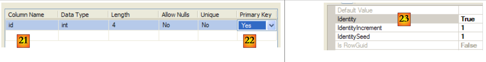
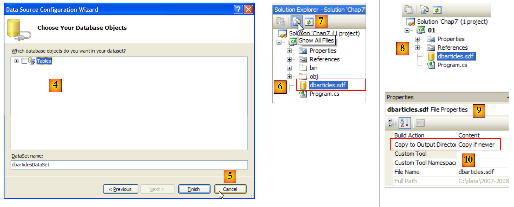
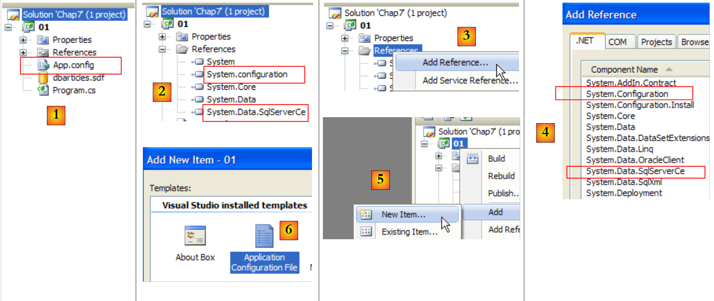
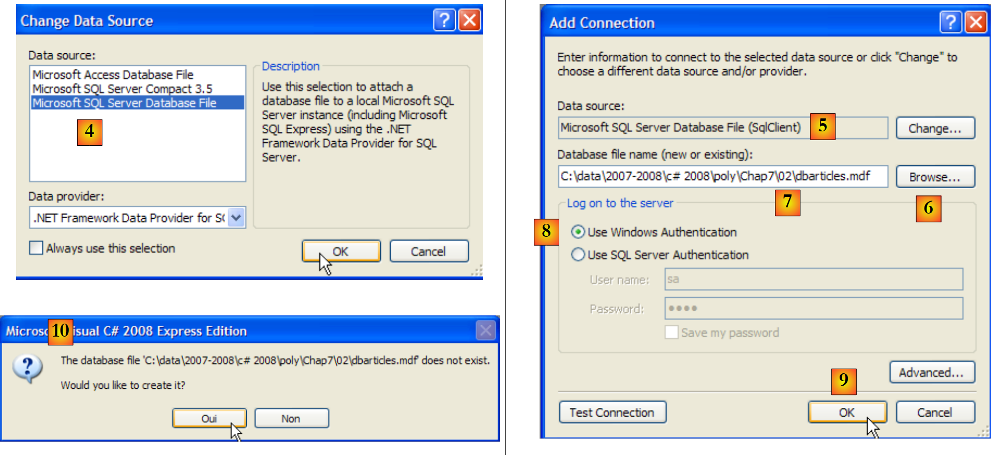
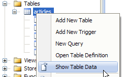
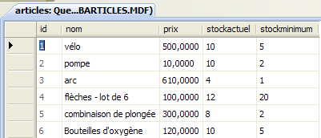
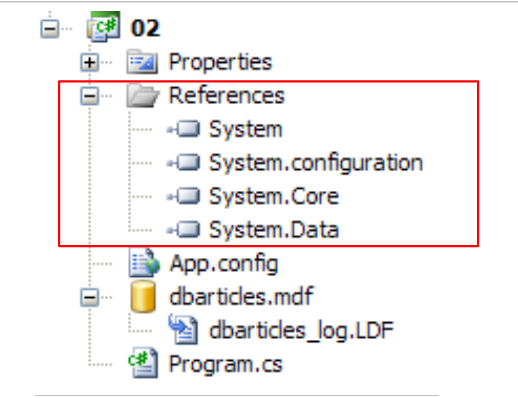
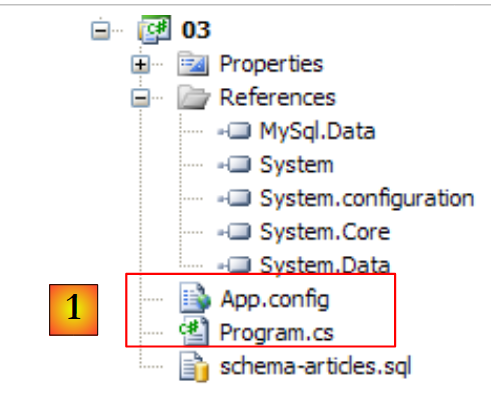

9. الوصول إلى قاعدة البيانات
9.1. موصل ADO.NET
دعونا نلقي نظرة أخرى على البنية الطبقية المستخدمة في مناسبات مختلفة
 |
في الأمثلة التي درسناها، استغلت طبقة [dao] حتى الآن نوعين من مصادر البيانات:
- البيانات المبرمجة بشكل ثابت
- البيانات من الملفات النصية
في هذا الفصل، ندرس الحالة التي تأتي فيها البيانات من قاعدة بيانات. ثم تتطور بنية الطبقات الثلاث إلى بنية متعددة الطبقات. هناك أنواع مختلفة من البنية متعددة الطبقات. سندرس المفاهيم الأساسية باستخدام ما يلي:
 |
في الرسم التوضيحي أعلاه، تتفاعل طبقة [dao] [1] مع نظام إدارة قواعد البيانات (SGBD) [3] من خلال مكتبة فئات خاصة بنظام إدارة قواعد البيانات المستخدم وتُرفق معه. وتنفذ هذه الطبقة وظائف قياسية تُعرف باسم ADO (Active X Data Objects). وتُسمى هذه الطبقة «مزود» (مزود الوصول إلى قاعدة البيانات في هذه الحالة) أو حتى «موصل». تتميز معظم SGBD الآن بموصل ADO.NET، وهو ما لم يكن الحال في الأيام الأولى لمنصة .NET. لا توفر موصلات .NET واجهة قياسية لطبقة [dao]، لذا تحتوي الأخيرة على أسماء فئات الموصل في كودها. إذا قمت بتغيير SGBD، فإنك تغير الموصل والفئات، ويجب عليك تغيير طبقة [dao] . وهذا الأمر فعال لأن موصل .NET، الذي تمت كتابته لنظام SGBD معين، يعرف أفضل طريقة لاستخدامه، ولكنه صارم أيضًا لأن تغيير نظام SGBD يعني تغيير طبقة [dao]. يجب وضع هذه الحجة الثانية في نصابها الصحيح: لا تقوم الشركات بتغيير نظام SGBD الخاص بها كثيرًا. سنرى لاحقًا أنه منذ الإصدار 2.0 من .NET، أصبح هناك موصل عام يوفر المرونة دون التضحية بالأداء.
9.2. طريقتان لاستخدام مصدر البيانات
تتيح لك منصة .NET الاستفادة من مصدر البيانات بطريقتين مختلفتين:
- الوضع المتصل
- الوضع غير المتصل
في الوضع المتصل، يقوم التطبيق
- يفتح اتصالاً بمصدر البيانات
- يعمل مع مصدر البيانات للقراءة/الكتابة
- يغلق الاتصال
في وضع عدم الاتصال، يقوم التطبيق
- يفتح اتصالاً بمصدر البيانات
- يحصل على نسخة في الذاكرة من جميع أو جزء من بيانات المصدر
- يغلق الاتصال
- يعمل مع نسخة الذاكرة من بيانات القراءة/الكتابة
- عند انتهاء المهمة، يفتح اتصالاً، ويرسل البيانات المعدلة إلى مصدر البيانات ليتم أخذها في الاعتبار، ويغلق الاتصال
سندرس هنا فقط في الوضع المتصل.
9.3. المفاهيم الأساسية لتشغيل قاعدة البيانات
سنقوم بشرح المفاهيم الرئيسية لاستخدام قاعدة البيانات باستخدام قاعدة بيانات SQL Server Compact 3.5. يتم توفير نظام إدارة قواعد البيانات (SGBD) هذا مع Visual Studio Express. إنه نظام إدارة قواعد بيانات خفيف الوزن لا يمكنه إدارة سوى مستخدم واحد في كل مرة. ومع ذلك، فهو كافٍ لتقديم برمجة قواعد البيانات. في وقت لاحق، سنقدم أنظمة إدارة قواعد بيانات أخرى.
وستكون البنية المستخدمة كما يلي:
 |
سيعمل تطبيق وحدة التحكم [1] على تشغيل قاعدة بيانات SqlServer Compact [3،4] عبر موصل Ado.Net الخاص بقاعدة البيانات هذه [2].
9.3.1. قم بزيارة قاعدة البيانات النموذجية
سنقوم بإنشاء قاعدة البيانات مباشرةً في Visual Studio Express. للقيام بذلك، نقوم بإنشاء مشروع جديد من نوع وحدة التحكم.
 |
- [1]: المشروع
- [2]: يفتح عرض "مستكشف قاعدة البيانات"
- [3]: إنشاء اتصال جديد
 |
- [4]: يحدد نوع نظام إدارة قواعد البيانات
- [5،6]: اختيار SGBD SQL Server Compact
- [7]: إنشاء قاعدة البيانات
- [8]: يتم تغليف قاعدة بيانات SQL Server Compact في ملف .sdf واحد. نحدد مكان إنشائها، هنا في مجلد مشروع C#.
- [9]: تم تسمية قاعدة البيانات الجديدة [dbarticles.sdf]
- [10]: تم تحديد اللغة الفرنسية. وهذا يؤثر على عمليات الفرز.
- [11،12]: يمكن حماية قاعدة البيانات بكلمة مرور. هنا "dbarticles".
- [13]: التحقق من صحة صفحة المعلومات. تم الآن إنشاء قاعدة البيانات فعليًا:
 |
- [14]: اسم قاعدة البيانات التي تم إنشاؤها للتو
- [15]: حدد الخيار "حفظ كلمة المرور" حتى لا تضطر إلى إعادة كتابتها في كل مرة
- [16]: تحقق من الاتصال
- [17]: كل شيء على ما يرام
- [18]: التحقق من صحة صفحة المعلومات
- [19]: يظهر الاتصال في مستكشف قاعدة البيانات
- [20]: في الوقت الحالي، لا تحتوي قاعدة البيانات على أي جداول. لنقم بإنشاء واحدة. ستحتوي المقالة على الحقول التالية:
- id : معرف فريد - المفتاح الأساسي
- name : اسم العنصر - فريد
- price : سعر العنصر
- stockactuel: المخزون الحالي
- الحد الأدنى للمخزون: الحد الأدنى لمستوى المخزون الذي يجب عند تجاوزه تجديد مخزون هذا الصنف
 |
- [21]: حقل [id] من النوع الصحيح وهو المفتاح الأساسي للجدول [22].
- [23]: هذا المفتاح الأساسي من نوع Identity. يشير هذا المفهوم، الخاص بخوادم SGBD SQL، إلى أن المفتاح الأساسي سيتم إنشاؤه بواسطة SGBD نفسه. هنا سيكون المفتاح الأساسي عددًا صحيحًا يبدأ من 1 ويزداد بمقدار 1 لكل مفتاح جديد.
 |
- [24]: يتم إنشاء الحقول الأخرى. لاحظ أن حقل [name] له قيد تفرد من نوع " " [25].
- [26]: يتم تسمية الجدول
- [27]: بمجرد التحقق من صحة بنية الجدول، يظهر في قاعدة البيانات.
 |
- [28]: طلب عرض محتويات الجدول
- [29]: فارغ حاليًا
- [30]: يتم ملؤه ببعض البيانات. يتم التحقق من صحة السطر بمجرد إدخال السطر التالي. لا يتم إدخال حقل [id]: يتم إنشاؤه تلقائيًا عند التحقق من صحة السطر.
نحتاج الآن إلى تكوين المشروع بحيث يتم نسخ قاعدة البيانات هذه، الموجودة حاليًا في جذر المشروع، تلقائيًا إلى مجلد تنفيذ المشروع:
 |
- [1]: طلب عرض جميع الملفات
- [2]: تظهر القاعدة [dbarticles.sdf]
- [3]: نقوم بإدراجها في المشروع
 |
- [4]: تؤدي عملية إضافة مصدر بيانات إلى مشروع إلى تشغيل معالج لا نحتاج إليه هنا [5].
- [6]: أصبحت القاعدة الآن جزءًا من المشروع. نعود إلى الوضع العادي [7].
- [8]: المشروع مع قاعدته
- [9]: في خصائص قاعدة البيانات، يمكننا أن نرى [10] أن قاعدة البيانات سيتم نسخها تلقائيًا إلى مجلد تنفيذ المشروع. هذا هو المكان الذي سيبحث فيه البرنامج الذي نحن على وشك كتابته عنها.
الآن بعد أن أصبح لدينا قاعدة بيانات متاحة، سنتمكن من الاستفادة منها. أولاً، دعونا نلقي نظرة على لغة SQL.
9.3.2. الأوامر الأربعة الأساسية للغة SQL
SQL (لغة الاستعلام الهيكلية) هي لغة موحدة جزئيًا للاستعلام عن قواعد البيانات وتحديثها. تحترم جميع أنظمة إدارة قواعد البيانات (SGBD) الجزء الموحد من SQL، ولكنها تضيف امتدادات خاصة باللغة تستفيد من ميزات معينة في SGBD. لقد رأينا بالفعل مثالين: غالبًا ما يعتمد الإنشاء التلقائي للمفاتيح الأساسية والأنواع المسموح بها لأعمدة الجدول على SGBD.
الأوامر الأربعة الأساسية للغة SQL التي نقدمها موحدة ومقبولة من قبل جميع أنظمة إدارة قواعد البيانات العلائقية (SGBD):
الاستعلام الذي يسترد البيانات الموجودة في قاعدة البيانات. الكلمات الرئيسية في السطر الأول هي فقط الإلزامية، أما البقية فهي اختيارية. توجد هنا كلمات رئيسية أخرى غير معروضة.
| |
يُدرج سطراً في الجدول. (col1, col2, ...) تحدد أعمدة الصف التي سيتم تهيئتها بالقيم (val1, val2, ...). | |
يُحدّث الجدول مع التحقق من الشرط (جميع الأسطر في حالة عدم وجود where). بالنسبة لهذه الأسطر، يتلقى col1 القيمة val1 | |
حذف جميع شروط التحقق الخاصة بالجدول |
سنقوم بكتابة تطبيق وحدة تحكم لإصدار أوامر SQL إلى قاعدة البيانات [dbarticles] التي أنشأناها سابقًا. فيما يلي مثال على تنفيذ الأمر . ندعو القارئ إلى فهم أوامر SQL الصادرة ونتائجها.
- السطر 1: سلسلة الاتصال: تحتوي على جميع المعلمات اللازمة للاتصال بقاعدة البيانات.
- السطر 3: يطلب محتويات الجدول [articles]
- السطر 16: يتم إدراج سطر جديد. لاحظ أن المعرف (id) لم يتم تهيئته في هذه العملية، حيث إن نظام إدارة قواعد البيانات (SGBD) هو الذي سيقوم بإنشاء قيمة هذا الحقل.
- السطر 19: تحقق. السطر 28، تمت إضافة السطر.
- السطر 30: تمت زيادة سعر العنصر الذي تمت إضافته للتو بنسبة 10٪.
- السطر 33: تحقق
- السطر 42: تمت زيادة السعر
- السطر 44: حذف العنصر الذي تمت إضافته مسبقًا
- السطر 47: تحقق
- الأسطر 53-55: لم يعد العنصر موجودًا.
9.3.3. واجهات ADO.NET الأساسية للوضع المتصل
لنعد إلى الرسم التخطيطي لتطبيق يستخدم قاعدة بيانات من خلال موصل ADO.NET:
 |
في الوضع المتصل، يقوم :
- يفتح اتصالاً بمصدر البيانات
- يعمل مع مصدر البيانات للقراءة/الكتابة
- يغلق الاتصال
هناك ثلاث واجهات ADO.NET تتعلق بشكل أساسي بهذه العمليات:
- IDbConnection التي تغلف خصائص وأساليب الاتصال.
- IDbCommand الذي يغلف الخصائص والأساليب الخاصة بأمر SQL قيد التنفيذ.
- IDataReader الذي يغلف خصائص وأساليب نتيجة أمر SQL Select.
تُستخدم لإدارة اتصال قاعدة البيانات. ستكون الطرق M والخصائص P لهذه الواجهة كما يلي:
الاسم | النوع | الدور |
P | سلسلة الاتصال بالقاعدة. تحدد جميع المعلمات المطلوبة لإنشاء اتصال بقاعدة معينة. | |
M | يفتح الاتصال بالقاعدة المحددة بواسطة ConnectionString | |
M | يغلق الاتصال | |
M | يبدأ معاملة. | |
P | حالة الاتصال: ConnectionState.Closed، ConnectionState.Open، ConnectionState.Connecting، ConnectionState.Executing، ConnectionState.Fetching، ConnectionState.Broken |
إذا كانت Connection فئة تنفذ IDbConnection، فيمكن فتح الاتصال على النحو التالي:
تُستخدم لتنفيذ أمر SQL أو إجراء مخزّن. ستكون الطرق M والخصائص P لهذه الواجهة كما يلي:
الاسم | النوع | الدور |
P | يشير إلى ما سيتم تنفيذه - يأخذ قيمه من قائمة: - CommandType.Text : ينفذ الأمر SQL المحدد في CommandText. هذه هي القيمة الافتراضية. - CommandType.StoredProcedure : ينفذ إجراءً مخزّنًا في | |
P | - نص أمر SQL المراد تنفيذه إذا كان CommandType= CommandType.Text - اسم الإجراء المخزن المراد تنفيذه إذا كان CommandType= CommandType.StoredProcedure | |
P | معرف الاتصال idbConnection الذي سيتم استخدامه لتنفيذ أمر SQL | |
P | معرف المعاملة IDbTransaction التي سيتم تنفيذ أمر SQL فيها | |
P | قائمة معلمات أمر SQL المعلم. يحتوي الأمر update articles set price=price*1.1 where id=@id على المعلمة @id. | |
M | لتنفيذ أمر SQL من نوع Select. والنتيجة هي كائن IDataReader يمثل نتيجة أمر Select. | |
M | لتنفيذ أمر SQL Update أو Insert أو Delete. يعطي هذا عدد الأسطر التي تأثرت بالعملية (تم تحديثها أو إدراجها أو حذفها). | |
M | لتنفيذ أمر SQL Select يعرض نتيجة واحدة كما في: select count(*) from articles. | |
M | لإنشاء معلمات أمر SQL IDbParameter. | |
M | تحسين تنفيذ استعلام معلمات عند تنفيذه عدة مرات بمعلمات مختلفة. |
إذا كانت Command فئة تنفذ IDbCommand، فسيتخذ تنفيذ أمر SQL بدون معاملة الشكل التالي:
تُستخدم لتغليف نتائج أمر SQL Select. يمثل كائن IDataReader جدولاً يحتوي على صفوف وأعمدة، يتم معالجتها بالتسلسل: أولاً الصف الأول، ثم الثاني، ... ستكون الطرق M والخصائص P لهذه الواجهة كما يلي:
الاسم | النوع | الدور |
P | عدد الأعمدة في الجدول IDataReader | |
M | تُرجع GetName(i) اسم العمود رقم i في الجدول IDataReader. | |
P | يمثل Item[i] العمود رقم i في الصف الحالي من الجدول IDataReader. | |
M | ينتقل إلى السطر التالي في الجدول IDataReader. Render قيمة منطقية True إذا كانت القراءة ممكنة، و False في الحالات الأخرى. | |
M | إغلاق الجدول IDataReader. | |
M | GetBoolean(i): تُرجع القيمة المنطقية للعمود رقم i في الصف الحالي من الجدول IDataReader. ومن بين الطرق المماثلة الأخرى: GetDateTime، GetDecimal، GetDouble، GetFloat، GetInt16، GetInt32، GetInt64، GetString. | |
M | Getvalue(i): تُرجع قيمة العمود رقم i في صف الجدول الحالي IDataReader ككائن من النوع. | |
M | IsDBNull(i) تعطي True إذا كان العمود رقم i في الصف الحالي لـ IDataReader لا يحتوي على قيمة، وهو ما يرمز له بـ SQL NULL. |
غالبًا ما يبدو استخدام كائن IDataReader كما يلي:
9.3.4. إدارة الأخطاء
دعونا نستعرض بنية تطبيق قاعدة البيانات:
 |
قد تواجه طبقة [dao] العديد من الأخطاء أثناء تشغيل قاعدة البيانات. سيتم رفع هذه الأخطاء كاستثناءات بواسطة موصل ADO.NET. يجب أن يتعامل كود طبقة [dao] معها. يجب تنفيذ أي عملية مع قاعدة البيانات في وضع try / catch / finally، من أجل اعتراض أي استثناء والتعامل معه وتحرير الموارد التي تحتاج إلى التحرير. على سبيل المثال، يصبح الكود الموضح أعلاه لاستغلال نتيجة أمر Select كما يلي:
مهما حدث، يجب إغلاق الكائنين IDataReader و IDbConnection. ولهذا السبب تم تضمين هذا الإغلاق في جمل finally.
يمكن أتمتة إغلاق الاتصال والكائن IDataReader باستخدام using :
- السطر 3، يضمن جملة using إغلاق الاتصال المفتوح في using(...){...} خارجها، بغض النظر عن كيفية الخروج من الكتلة: بشكل عادي أو بوصول استثناء. هذا يوفر جملة finally، لكن الفائدة ليست في هذا التوفير البسيط. يمنع استخدام using المطور من إغلاق الاتصال بنفسه. أو قد يمر نسيان إغلاق الاتصال دون أن يلاحظه أحد ويؤدي إلى "تعطل" التطبيق بطريقة تبدو عشوائية، في كل مرة يصل فيها SGBD إلى الحد الأقصى لعدد الاتصالات المفتوحة التي يمكنه دعمها.
- السطر 11: تابع بنفس الطريقة لإغلاق الكائن IDataReader.
9.3.5. مثال على تكوين المشروع
سيكون المشروع النهائي كما يلي:
 |
- [1]: سيحتوي المشروع على ملف تكوين [App.config]
- [2]: يستخدم فئتين DLL غير مشار إليهما افتراضيًا، وبالتالي يجب إضافتهما إلى مراجع المشروع:
- [System.Configuration] لاستخدام ملف التكوين [App.config]
- [System.Data.SqlServerCe] لتشغيل قاعدة بيانات Sql Server Compact
- [3، 4]: تذكير بكيفية إضافة المراجع إلى مشروع.
- [5، 6]: تذكر كيفية إضافة ملف [App.config] إلى مشروع.
سيكون ملف التكوين [App.config] كما يلي:
<?xml version="1.0" encoding="utf-8" ?>
<configuration>
<connectionStrings>
<add name="dbSqlServerCe" connectionString="Data Source=|DataDirectory|\dbarticles.sdf;Password=dbarticles;" />
</connectionStrings>
</configuration>
- الأسطر 3-5: تحدد علامة <connectionStrings> سلاسل اتصال قاعدة البيانات. تتخذ سلسلة الاتصال الشكل "parameter1=value1;parameter2=value2;...". وهي تحدد جميع المعلمات المطلوبة لإنشاء اتصال بقاعدة بيانات معينة. تتغير سلاسل الاتصال هذه مع كل SGBD. يقدم [http://www.connectionstrings.com/] شكل هذه السلاسل بالنسبة لـ SGBD الرئيسي.
- السطر 4: يحدد سلسلة اتصال محددة، هنا لقاعدة بيانات SQL Server Compact dbarticles.sdf التي أنشأناها سابقًا:
- name = اسم سلسلة الاتصال. يتم استرداد سلسلة الاتصال بواسطة برنامج C# من خلال هذا الاسم
- connectionString : سلسلة الاتصال لقاعدة بيانات SQL Server Compact
- DataSource : يحدد المسار الأساسي. تحدد صيغة |DataDirectory| مجلد تنفيذ المشروع.
- Password : كلمة المرور الأساسية. لا توجد هذه المعلمة في حالة عدم وجود كلمة مرور.
فيما يلي كود C# لاسترداد سلسلة الاتصال السابقة:
string connectionString = ConfigurationManager.ConnectionStrings["dbSqlServerCe"].ConnectionString;
- ConfigurationManager هي فئة مكتبة DLL [System.Configuration]، والتي تُستخدم لتشغيل ملف [App.config].
- ConnectionsStrings["nom"].ConnectionString : يشير إلى علامة connectionString < add name="name" connectionString="..."> القسم <connectionStrings> من [App.config]
تم تكوين المشروع الآن. نحن الآن ننظر إلى فئة [Program.cs]، التي رأينا مثالاً عليها سابقًا.
9.3.6. برنامج العينة
برنامج [program.cs] هو كما يلي:
using System;
using System.Collections.Generic;
using System.Data.SqlServerCe;
using System.Text;
using System.Text.RegularExpressions;
using System.Configuration;
namespace Chap7 {
class SqlCommands {
static void Main(string[] args) {
// console application - executes SQL requests typed from the keyboard
// on a database whose connection string is obtained from a configuration file
// use of configuration file [App.config]
string connectionString = null;
try {
connectionString = ConfigurationManager.ConnectionStrings["dbSqlServerCe"].ConnectionString;
} catch (Exception e) {
Console.WriteLine("Erreur de configuration : {0}", e.Message);
return;
}
// display connection string
Console.WriteLine("Chaîne de connexion à la base : [{0}]\n", connectionString);
// build a dictionary of accepted sql commands
string[] commandesSQL = new string[] { "select", "insert", "update", "delete" };
Dictionary<string, bool> dicoCommandes = new Dictionary<string, bool>();
for (int i = 0; i < commandesSQL.Length; i++) {
dicoCommandes.Add(commandesSQL[i], true);
}
// read-execute SQL commands typed on the keyboard
string requête = nu ll; // query text SQL
string[] cham ps; // query fields
Regex modèle = new Regex(@"\s+ "); // sequence of spaces
// input-execution loop for SQL commands typed on keyboard
while (true) {
// request for query
Console.Write("\nRequête SQL (rien pour arrêter) : ");
requête = Console.ReadLine().Trim().ToLower();
// finished?
if (requête == "")
break;
// the query is broken down into fields
champs = modèle.Split(requête);
// valid request?
if (champs.Length == 0 || ! dicoCommandes.ContainsKey(champs[0])) {
// error msg
Console.WriteLine("Requête invalide. Utilisez select, insert, update, delete ou rien pour arrêter");
// following request
continue;
}
// query execution
if (champs[0] == "select") {
ExecuteSelect(connectionString, requête);
} else
ExecuteUpdate(connectionString, requête);
}
}
// execute an update request
static void ExecuteUpdate(string connectionString, string requête) {
...
}
// executing a Select query
static void ExecuteSelect(string connectionString, string requête) {
....
}
}
}
- الأسطر 1-6: مساحات الأسماء المستخدمة في التطبيق. تتطلب إدارة قاعدة بيانات SQL Server Compact مساحة الاسم [System.Data.SqlServerCe] في السطر 3. وهذا يمثل تبعية لمساحة اسم خاصة بـ SGBD. وهذا يعني أنه سيتعين تعديل البرنامج في حالة تغيير SGBD.
- السطر 18: يتم قراءة سلسلة اتصال قاعدة البيانات من الملف [App.config] وعرضها في السطر 25. وسيتم استخدامها لإنشاء اتصال بقاعدة البيانات.
- الأسطر 28-32: قاموس يخزن أسماء الأوامر الأربعة المصرح بها في SQL: select، insert، update، delete.
- الأسطر 40-62: الحلقة لإدخال أوامر SQL المكتوبة على لوحة المفاتيح وتنفيذها على قاعدة البيانات
- السطر 48: يتم تقسيم السطر المكتوب على لوحة المفاتيح إلى حقول لتحديد المصطلح الأول، الذي يجب أن يكون: select، insert، update، delete
- الأسطر 50-55: إذا كان الاستعلام غير صالح، يتم عرض رسالة خطأ وتنتقل إلى الاستعلام التالي.
- الأسطر 57-61: يتم تنفيذ أمر SQL الذي تم إدخاله. يأخذ هذا التنفيذ شكلاً مختلفًا اعتمادًا على ما إذا كان الأمر هو select أو أمر insert أو update أو delete. في الحالة الأولى، يسترد الأمر البيانات من قاعدة البيانات دون تعديلها؛ وفي الحالة الثانية، يقوم بتحديث قاعدة البيانات دون استرداد البيانات. في كلتا الحالتين، يتم تفويض التنفيذ إلى طريقة تحتاج إلى معلمتين:
- سلسلة الاتصال التي ستسمح لها بالاتصال بقاعدة البيانات
- أمر SQL المراد تنفيذه على هذا الاتصال
9.3.7. تنفيذ استعلام SELECT
يتطلب تنفيذ أوامر SQL الخطوات التالية:
- الاتصال بقاعدة البيانات
- إرسال أوامر SQL إلى قاعدة البيانات
- معالجة نتائج أوامر SQL
- إغلاق الاتصال
يتم تنفيذ الخطوتين 2 و 3 بشكل متكرر، ولا يتم إغلاق الاتصال إلا عندما لا يتم استخدام قاعدة البيانات بعد الآن. تعد الاتصالات المفتوحة موارد محدودة في نظام إدارة قواعد البيانات (SGBD). لذا يجب الحفاظ عليها. ولهذا السبب نحاول دائمًا الحد من مدة بقاء الاتصال المفتوح. في هذا المثال، يتم إغلاق الاتصال بعد كل أمر SQL. يتم فتح اتصال جديد لأمر SQL التالي. فتح وإغلاق الاتصال مكلف. لتقليل هذه التكلفة، تقدم بعض أنظمة إدارة قواعد البيانات (SGBD) مفهوم تجمعات الاتصالات المفتوحة: عند تهيئة التطبيق، يتم فتح N اتصال وتخصيصها للتجمع. وتظل مفتوحة حتى نهاية التطبيق. عندما يفتح التطبيق اتصالاً، يتلقى أحد الاتصالات N المفتوحة بالفعل في التجمع. وعندما يغلق الاتصال، يعيدها ببساطة إلى التجمع. ميزة هذا النظام هي أنه شفاف للمطور: لا يتعين تعديل البرنامج لاستخدام تجمع الاتصالات. يعتمد تكوين تجمع الاتصالات على نظام إدارة قواعد البيانات (SGBD).
أولاً، ننظر إلى تنفيذ أوامر SQL Select. طريقة ExecuteSelect في برنامجنا المثال هي كما يلي:
// execute a Select query
static void ExecuteSelect(string connectionString, string requête) {
// handle any exceptions
try {
using (SqlCeConnection connexion = new SqlCeConnection(connectionString)) {
// opening connection
connexion.Open();
// executes sqlCommand with select query
SqlCeCommand sqlCommand = new SqlCeCommand(requête, connexion);
SqlCeDataReader reader= sqlCommand.ExecuteReader();
// displaying results
AfficheReader(reader);
}
} catch (Exception ex) {
// error msg
Console.WriteLine("Erreur d'accès à la base de données (" + ex.Message + ")");
}
}
// reader display
static void AfficheReader(IDataReader reader) {
...
}
- السطر 2: تتلقى الطريقة معلمتين:
- سلسلة الاتصال [connectionString] التي ستسمح لها بالاتصال بقاعدة البيانات
- أمر SQL Select [request] المراد تنفيذه على هذا الاتصال
- السطر 4: قد تؤدي أي عملية مع قاعدة البيانات إلى حدوث استثناء قد ترغب في معالجته. وهذا أمر مهم للغاية هنا لأن أوامر SQL التي يقدمها المستخدم قد تكون خاطئة من الناحية النحوية. وعلينا أن نكون قادرين على إخباره بذلك. ولذلك، فإن كل الكود موجود داخل try / catch.
- السطر 5: هناك عدة أمور هنا:
- يتم تهيئة الاتصال بقاعدة البيانات باستخدام سلسلة الاتصال [connectionString]. لم يتم فتحه بعد. سيتم فتحه في السطر 7.
- الجملة using (Resource) {...} هي أداة نحوية تضمن تحرير المورد Resource، وهو هنا اتصال، عند خرج الكتلة التي يتحكم فيها using.
- الاتصال من نوع خاص: SqlCeConnection، خاص بـ SGBD SQL Server Compact.
- السطر 7: يتم فتح الاتصال. ويتم ذلك عند استخدام معلمات سلسلة الاتصال.
- السطر 9: يتم إصدار أمر SQL عبر كائن مالك SqlCeCommand. يقوم السطر 9 بتهيئة هذا الكائن بمعلومتين: الاتصال المراد استخدامه وأمر SQL المراد إرساله عليه. يمكن استخدام كائن SqlCeCommand لتنفيذ أمر Select أو أمر Update أو Insert أو Delete. تم عرض خصائصه وأساليبه في الفقرة 9.3.3.
- السطر 10: يتم تنفيذ أمر SQL Select عبر كائن ExecuteReader SqlCeCommand الذي ينشئ كائن IDataReader الذي تم عرض أساليبه وخصائصه في الفقرة 9.3.3.
- السطر 12: يتم عرض النتائج بواسطة AfficheReader التالي:
// reader display
static void AfficheReader(IDataReader reader) {
using (reader) {
// exploitation of results
// -- columns
StringBuilder ligne = new StringBuilder();
int i;
for (i = 0; i < reader.FieldCount - 1; i++) {
ligne.Append(reader.GetName(i)).Append(",");
}
ligne.Append(reader.GetName(i));
Console.WriteLine("\n{0}\n{1}\n{2}\n", "".PadLeft(ligne.Length, '-'), ligne, "".PadLeft(ligne.Length, '-'));
// -- data
while (reader.Read()) {
// current line operation
ligne = new StringBuilder();
for (i = 0; i < reader.FieldCount; i++) {
ligne.Append(reader[i].ToString()).Append(" ");
}
Console.WriteLine(ligne);
}
}
}
- السطر 2: تستقبل الطريقة كائن IDataReader. لاحظ أن IDataReader هي واجهة وليست فئة محددة.
- السطر 3: تُستخدم عبارة using لإدارة إغلاق كائن IDataReader تلقائيًا.
- الأسطر 8-10: أسماء أعمدة جدول النتائج لـ Select. هذه هي أعمدة coli لطلب select col1, col2, ... from table ...
- الأسطر 14-21: تصفح جدول النتائج وعرض القيم لكل سطر في الجدول.
- السطر 18: لا نعرف نوع العمود i في النتيجة لأننا لا نعرف الجدول الذي يتم الاستعلام عنه. صيغة reader.GetXXX(i) حيث XXX هو نوع العمود رقم i، لأن هذا النوع غير معروف. ثم نستخدم بناء الجملة reader.Item[i].ToString() للحصول على تمثيل السلسلة للعمود رقم i. يمكن اختصار بناء الجملة reader.Item[i].ToString() إلى reader[i].ToString().
9.3.8. تنفيذ أمر التحديث: INSERT، UPDATE، DELETE
رمز الطريقة ExecuteUpdate هو كما يلي:
// execute an update request
static void ExecuteUpdate(string connectionString, string requête) {
// handle any exceptions
try {
using (SqlCeConnection connexion = new SqlCeConnection(connectionString)) {
// opening connection
connexion.Open();
// executes sqlCommand with update request
SqlCeCommand sqlCommand = new SqlCeCommand(requête, connexion);
int nbLignes = sqlCommand.ExecuteNonQuery();
// result display
Console.WriteLine("Il y a eu {0} ligne(s) modifiée(s)", nbLignes);
}
} catch (Exception ex) {
// error msg
Console.WriteLine("Erreur d'accès à la base de données (" + ex.Message + ")");
}
}
لقد ذكرنا أن تنفيذ أمر الاستعلام Select لا يختلف عن تنفيذ أوامر التحديث Update و Insert و Delete من خلال الطريقة SqlCeCommand المستخدمة: ExecuteReader لـ Select، و ExecuteNonQuery لـ Update و Insert و Delete. ونعلق فقط على الطريقة الأخيرة في الكود أعلاه:
- السطر 10: يتم تنفيذ أوامر Update و Insert و Delete بواسطة كائن ExecuteNonQuery SqlCeCommand. في حالة النجاح، تُرجع هذه الطريقة عدد الأسطر التي تم تحديثها (update) أو إدراجها (insert) أو حذفها (delete).
- السطر 12: يتم عرض عدد الأسطر هذا على الشاشة
ندعو القارئ إلى مراجعة مثال حول كيفية تنفيذ هذا الكود، الفقرة 9.3.2.
9.4. موصلات ADO.NET الأخرى
الرمز الذي درسناه هو رمز خاص: فهو يعتمد على [System.Data.SqlServerCe] لنظام إدارة قواعد البيانات SGBD SQL Server Compact. سنقوم الآن بإنشاء نفس البرنامج باستخدام موصلات .NET مختلفة ونرى ما الذي سيتغير.
9.4.1. موصل SQL Server 2005
ستكون البنية المستخدمة كما يلي:
 |
يتم وصف تثبيت SQL Server 2005 في الملاحق في الفقرة 1.1.
نقوم بإنشاء مشروع ثانٍ في نفس الحل كما في السابق، ثم ننشئ قاعدة بيانات SQL Server 2005. يجب تشغيل نظام إدارة قواعد البيانات SQL Server 2005 قبل القيام بالعمليات التالية:
 |
- [1]: إنشاء مشروع جديد في الحل الحالي وجعله المشروع الحالي.
- [2]: إنشاء اتصال جديد
- [3]: حدد نوع الاتصال
 |
- [4]: حدد SGBD SQL Server
- [5]: نتيجة الاختيار السابق
- [6]: استخدم زر [Browse] لتحديد مكان إنشاء قاعدة بيانات SQL Server 2005. يتم تغليف قاعدة البيانات في ملف .mdf.
- [7]: حدد جذر المشروع الجديد واستدعِ الملف الأساسي [dbarticles.mdf].
- [8]: استخدم مصادقة Windows.
- [9]: تحقق من صحة صفحة المعلومات
 |
- [11]: قاعدة بيانات SQL Server
- [12]: إنشاء جدول. سيكون هذا مطابقًا لقاعدة بيانات SQL Server Compact التي تم إنشاؤها مسبقًا.
- [13]: حقل [id]
- [14]: الحقل [id] من النوع Identity.
- [15،16]: الحقل [id] هو المفتاح الأساسي
 |
- [17]: حقول الجدول الأخرى
- [18]: قم بتسمية الجدول [articles] عند حفظه (Ctrl+S).
لا يزال يتعين علينا إدخال البيانات في:
 |  |
نقوم بتضمين قاعدة البيانات في:
 |
مراجع المشروع هي كما يلي:
 |
ملف التكوين [App.config] هو كما يلي:
<?xml version="1.0" encoding="utf-8" ?>
<configuration>
<connectionStrings>
<add name="connectString1" connectionString="Data Source=.\SQLEXPRESS;AttachDbFilename=|DataDirectory|\dbarticles.mdf;Integrated Security=True;Connect Timeout=30;User Instance=True;" />
<add name="connectString2" connectionString="Data Source=.\SQLEXPRESS;AttachDbFilename=|DataDirectory|\dbarticles.mdf;Uid=sa;Pwd=msde;Connect Timeout=30;" />
</connectionStrings>
</configuration>
- السطر 4: سلسلة اتصال قاعدة البيانات [dbarticles.mdf] مع مصادقة Windows
- السطر 5: سلسلة اتصال قاعدة البيانات [dbarticles.mdf] مع مصادقة SQL Server. [sa,msde] هو الزوج (تسجيل الدخول، كلمة المرور) لمسؤول SQL Server كما هو محدد في الفقرة 1.1.
يتطور برنامج [Program.cs] على النحو التالي:
using System.Data.SqlClient;
...
namespace Chap7 {
class SqlCommands {
static void Main(string[] args) {
...
// use of configuration file [App.config]
string connectionString = null;
try {
connectionString = ConfigurationManager.ConnectionStrings["connectString2"].ConnectionString;
} catch (Exception e) {
...
}
...
// read-execute SQL commands typed on the keyboard
...
}
// execute an update request
static void ExecuteUpdate(string connectionString, string requête) {
// handle any exceptions
try {
using (SqlConnection connexion = new SqlConnection(connectionString)) {
// opening connection
connexion.Open();
// executes sqlCommand with update request
SqlCommand sqlCommand = new SqlCommand(requête, connexion);
int nbLignes = sqlCommand.ExecuteNonQuery();
// result display
Console.WriteLine("Il y a eu {0} ligne(s) modifiée(s)", nbLignes);
}
} catch (Exception ex) {
....
}
}
// execute a Select query
static void ExecuteSelect(string connectionString, string requête) {
// handle any exceptions
try {
using (SqlConnection connexion = new SqlConnection(connectionString)) {
// opening connection
connexion.Open();
// executes sqlCommand with select query
SqlCommand sqlCommand = new SqlCommand(requête, connexion);
SqlDataReader reader = sqlCommand.ExecuteReader();
// exploitation of results
...
}
} catch (Exception ex) {
...
}
}
}
}
- السطر 1: مساحة الأسماء [System.Data.SqlClient] تحتوي على فئات لإدارة قاعدة بيانات SQL Server 2005
- السطر 24: الاتصال هو SQLConnection
- السطر 28: الكائن الذي يغلف أوامر SQL هو من النوع SQLCommand
- السطر 47: الكائن الذي يغلف نتيجة أمر SQL Select هو من النوع SQLDataReader
الرمز مطابق للرمز المستخدم مع SGBD SQL Server Compact، باستثناء أسماء الفئات. لتنفيذه، يمكنك استخدام (السطر 11) أي من سلسلتي الاتصال المحددتين في [App.config].
9.4.2. الموصل MySQL5
ستكون البنية المستخدمة كما يلي:
 |
يتم وصف تثبيت MySQL5 في الملاحق في الفقرة 1.2 الموصل وموصل Ado.Net في الفقرة 1.2.5.
نقوم بإنشاء مشروع ثالث في نفس الحل كما في السابق ونضيف المراجع التي يحتاجها:
 |
- [1]: المشروع الجديد
- [2]: الذي نضيف إليه المراجع
- [3]: مكتبة DLL [MySQL.Data] الخاصة بموصل Ado.Net لـ MySql5 بالإضافة إلى مكتبة [System.Configuration] [4].
نقوم الآن بإنشاء قاعدة البيانات [dbarticles] وجدولها [articles]. يجب تشغيل نظام إدارة قواعد البيانات MySQL5. بالإضافة إلى ذلك، نقوم بتشغيل عميل [Query Browser] (انظر الفقرة 1.2.3).
 |
- [1]: في [Query Browser]، انقر بزر الماوس الأيمن في منطقة [Schemata] [2] لإنشاء [3] مخطط جديد، وهو المصطلح المستخدم لوصف قاعدة البيانات.
- [4]: ستسمى قاعدة البيانات [dbarticles]. في [5]، نراها. في الوقت الحالي، لا تحتوي على أي جداول. سنقوم بتنفيذ البرنامج النصي SQL التالي:
- السطر 1: تصبح قاعدة البيانات [dbarticles] هي قاعدة البيانات الحالية. سيتم تنفيذ أوامر SQL التالية عليها.
- الأسطر 4-10: تعريف الجدول [ARTICLES]. لاحظ أن SQL يمتلك MySQL. تختلف أنواع الأعمدة والتوليد التلقائي للمفتاح الأساسي (سمة AUTO_INCREMENT) عن تلك الموجودة في SGBD SQL Server Compact و Express.
- الأسطر 12-14: إدراج ثلاثة أسطر
- الأسطر 16-21: إضافة قيود التكامل على الأعمدة.
يتم تنفيذ هذا البرنامج النصي في [MySQL Query Browser]:
 |
- في [MySQL Query Browser] [6]، نقوم بتحميل البرنامج النصي [7]. يمكنك رؤيته في [8]. في [9]، يتم تنفيذه.
 |
- في [10]، تم إنشاء الجدول [articles]. انقر عليه مرتين. سيؤدي ذلك إلى ظهور النافذة [11] التي تحتوي على الاستعلام [12]، جاهزًا للتنفيذ بواسطة [13]. في [14]، نتيجة التنفيذ. لدينا الأسطر الثلاثة المتوقعة. لاحظ أن القيم في الحقل [ID] تم إنشاؤها تلقائيًا (سمة الحقل AUTO_INCREMENT).
الآن بعد أن أصبحت قاعدة البيانات جاهزة، يمكننا العودة إلى تطوير التطبيق في Visual Studio.
 |
في [1]، يوجد البرنامج [Program.cs] وملف التكوين [App.config]. وفيما يلي نص الملف الأخير:
<?xml version="1.0" encoding="utf-8" ?>
<configuration>
<connectionStrings>
<add name="dbArticlesMySql5" connectionString="Server=localhost;Database=dbarticles;Uid=root;Pwd=root;" />
</connectionStrings>
</configuration>
السطر 4، عناصر سلسلة الاتصال هي كما يلي:
- Server : اسم الجهاز الذي يوجد عليه نظام إدارة قواعد البيانات MySQL، وهو هنا localhost، أي الجهاز الذي سيتم تشغيل البرنامج عليه.
- قاعدة البيانات: اسم قاعدة البيانات المدارة، وهي هنا dbarticles
- Uid: اسم المستخدم، هنا root
- Pwd: كلمة المرور الخاصة به، وهي هنا root. تشير هاتان المعلومتان إلى المسؤول الذي تم إنشاؤه في الفقرة 1.2.
برنامج [Program.cs] مطابق لبرنامج الإصدارات السابقة، باستثناء التفاصيل التالية:
MySql.Data.MySqlClient | |
MySqlConnection | |
MySqlCommand | |
MySqlDataReader |
يستخدم البرنامج سلسلة الاتصال المسماة dbArticlesMySql5 الموجودة في الملف [App.config]. ويؤدي التنفيذ إلى النتائج التالية:
9.4.3. موصل ODBC
ستكون البنية المستخدمة على النحو التالي:
 |
تتمثل ميزة موصلات ODBC في أنها توفر واجهة قياسية للتطبيقات التي تستخدمها. وبالتالي، باستخدام رمز واحد، سيتمكن التطبيق الجديد من التواصل مع أي نظام إدارة قواعد البيانات (SGBD) باستخدام موصل ODBC أو CAD أو SGBD. أداء موصلات ODBC ليس جيدًا مثل أداء الموصلات "المملوكة"، التي يمكنها استغلال جميع ميزات نظام إدارة قواعد البيانات (SGBD) معين. من ناحية أخرى، تحصل على مرونة كبيرة في التطبيق: يمكنك تغيير نظام إدارة قواعد البيانات (SGBD) دون تغيير الكود.
سنلقي نظرة على مثال يستخدم فيه التطبيق قاعدة بيانات MySQL5 أو قاعدة بيانات SQL Server Express، اعتمادًا على سلسلة الاتصال التي تحددها. في ما يلي، نفترض أن:
- تم تشغيل SGBD SQL Server Express و MySQL5
- أن برنامج تشغيل ODBC من MySQL5 موجود على الجهاز (انظر الفقرة 1.2.6). الإعداد الافتراضي هو SQL Server 2005.
- قواعد البيانات المستخدمة هي تلك الموجودة في الفقرة 9.4.2 لقاعدة MySQL5، وتلك الموجودة في الفقرة 9.4.1 لقاعدة بيانات SQL Server Express.
مشروع Visual Studio الجديد هو كما يلي:
 |
أعلاه، تم نسخ قاعدة بيانات SQL Server [dbarticles.mdf] التي تم إنشاؤها في الفقرة 9.4.1 إلى ملف المشروع.
ملف التكوين [App.config] هو كما يلي:
<?xml version="1.0" encoding="utf-8" ?>
<configuration>
<connectionStrings>
<add name="dbArticlesOdbcMySql5" connectionString="Driver={MySQL ODBC 3.51 Driver};Server=localhost;Database=dbarticles; User=root;Password=root;" />
<add name="dbArticlesOdbcSqlServer2005" connectionString="Driver={SQL Native Client};Server=.\SQLExpress;AttachDbFilename=|DataDirectory|\dbarticles.mdf;Uid=sa;Pwd=msde;" />
</connectionStrings>
</configuration>
- السطر 4: سلسلة اتصال المصدر ODBC MySQL5. هذه سلسلة تمت دراستها سابقًا، حيث نجد فيها معلمة جديدة هي Driver التي تحدد برنامج تشغيل ODBC المراد استخدامه.
- السطر 5: سلسلة اتصال المصدر ODBC SQL Server Express. هذه هي السلسلة التي تم استخدامها بالفعل في مثال سابق، والتي تمت إضافة المعلمة Driver إليها.
برنامج [Program.cs] مطابق لبرنامج الإصدارات السابقة، باستثناء التفاصيل التالية:
System.Data.Odbc | |
OdbcConnection | |
OdbcCommand | |
OdbcDataReader |
يستخدم البرنامج أحد سلسلتي الاتصال المحددتين في الملف [App.config]. ويؤدي التنفيذ إلى النتائج التالية:
مع سلسلة الاتصال [dbArticlesOdbcSqlServer2005] :
مع سلسلة الاتصال [dbArticlesOdbcMySql5] :
9.4.4. موصل OLE DB
ستكون البنية المستخدمة على النحو التالي:
 |
كما هو الحال مع موصلات ODBC، تتوفر أيضًا موصلات OLE DB (Object Linking and Embedding DataBase) التي توفر واجهة قياسية للتطبيقات التي تستخدمها. تتيح برامج تشغيل ODBC الوصول إلى قواعد البيانات. أما برامج تشغيل مصادر البيانات لـ OLE DB فهي أكثر تنوعًا: قواعد البيانات، وأنظمة المراسلة، والدلائل، وما إلى ذلك. يمكن لأي مصدر بيانات أن يكون موضوعًا لبرنامج تشغيل OLE DB، إذا قرر المحرر ذلك. وهذا يوفر وصولًا قياسيًا إلى مجموعة واسعة من البيانات.
سنلقي نظرة على مثال يستخدم فيه التطبيق قاعدة بيانات ACCESS أو SQL Server Express، اعتمادًا على سلسلة الاتصال التي تحددها. في ما يلي، نفترض أن SGBD SQL Server Express قد تم تشغيله وأن قاعدة البيانات المستخدمة هي تلك الموجودة في المثال السابق.
مشروع Visual Studio الجديد هو كما يلي:
 |
- في [1]: مساحة الاسم المطلوبة لموصلات OLE DB هي [System.Data.OleDb] الموجودة في المرجع [System.Data] أعلاه. تم نسخ قاعدة بيانات SQL Server [dbarticles.mdf] من المشروع السابق. تم إنشاء قاعدة [dbarticles.mdb] باستخدام Access.
- في [2]: مثل قاعدة بيانات SQL Server، تتمتع قاعدة بيانات ACCESS بخاصية [Copy to Output Directory=Copy Always]، بحيث يتم نسخها تلقائيًا إلى مجلد تنفيذ المشروع.
قاعدة بيانات ACCESS [dbarticles.mdb] هي كما يلي:
 |
في [1]، هيكل الجدول [articles] وفي [2] محتوياته.
ملف التكوين [App.config] هو كما يلي:
<?xml version="1.0" encoding="utf-8" ?>
<configuration>
<connectionStrings>
<add name="dbArticlesOleDbAccess" connectionString="Provider=Microsoft.Jet.OLEDB.4.0;Data Source=|DataDirectory|\dbarticles.mdb;"/>
<add name="dbArticlesOleDbSqlServer2005" connectionString="Provider=SQLNCLI;Server=.\SQLEXPRESS;AttachDbFilename=|DataDirectory|\dbarticles.mdf;Uid=sa;Pwd=msde;" />
</connectionStrings>
</configuration>
- السطر 4: سلسلة اتصال المصدر OLE DB ACCESS. تحتوي على المعلمة Provider التي تحدد برنامج تشغيل OLE DB المراد استخدامه ومسار قاعدة البيانات
- السطر 5: سلسلة اتصال المصدر OLE DB Server Express.
برنامج [Program.cs] مطابق لبرنامج الإصدارات السابقة، باستثناء التفاصيل التالية:
System.Data.OleDb | |
OleDbConnection | |
OleDbCommand | |
OleDbDataReader |
يستخدم البرنامج أحد سلسلتي الاتصال المحددتين في الملف [App.config]. يعطي التنفيذ النتائج التالية باستخدام سلسلة الاتصال [dbArticlesOleDbAccess]:
9.4.5. موصل عام
ستكون البنية المستخدمة على النحو التالي:
 |
مثل موصلات ODBC و OLE DB، يقدم الموصل العام واجهة قياسية للتطبيقات التي تستخدمه، ولكنه يحسن الأداء دون التضحية بالمرونة. يعتمد الموصل العام على موصلات SGBD الخاصة. يستخدم التطبيق فئات من الموصل العام. تعمل هذه الفئات كوسطاء بين التطبيق والموصل الخاص.
في المثال أعلاه، عندما يطلب التطبيق اتصالاً بالموصل العام، يعيد هذا الأخير IDbConnection، وهي واجهة الاتصال الموصوفة في الفقرة 9.3.3، والتي يتم تنفيذها بواسطة MySQLConnection أو SQLConnection وفقاً لطبيعة الطلب المقدم إليه. يُقال إن الموصل العام يحتوي على فئات من نوع المصنع: نستخدم مصنعًا لنطلب منه إنشاء كائنات وإعطاء مراجع لها (مؤشرات). ومن هنا جاء اسمه (مصنع = مصنع، مصنع إنتاج الكائنات).
لا يوجد موصل عام لجميع SGBD (أبريل 2008). لمعرفة أي منها مثبت على جهاز معين، استخدم البرنامج التالي:
using System;
using System.Data;
using System.Data.Common;
namespace Chap7 {
class Providers {
public static void Main() {
DataTable dt = DbProviderFactories.GetFactoryClasses();
foreach (DataColumn col in dt.Columns) {
Console.Write("{0}|", col.ColumnName);
}
Console.WriteLine("\n".PadRight(40, '-'));
foreach (DataRow row in dt.Rows) {
foreach (object item in row.ItemArray) {
Console.Write("{0}|", item);
}
Console.WriteLine("\n".PadRight(40, '-'));
}
}
}
}
- السطر 8: تعيد الطريقة الثابتة [DbProviderFactories.GetFactoryClasses()] قائمة بالموصلات العامة المثبتة، في شكل جدول قاعدة بيانات مخزّن في الذاكرة (DataTable).
- الأسطر 9-11: عرض أسماء أعمدة الجدول dt :
- dt.Columns هي قائمة أعمدة الجدول. العمود C هو من نوع DataColumn
- [DataColumn].ColumnName هو اسم العمود
- الصفوف 13-18: عرض صفوف الجدول dt :
- dt.Rows هي قائمة صفوف الجدول. الصف L هو من النوع DataRow
- [DataRow].ItemArray عبارة عن مصفوفة من الكائنات، حيث يمثل كل كائن عمودًا في الصف
والنتيجة على جهازي هي كما يلي:
- السطر 1: يحتوي الجدول على أربعة أعمدة. الأعمدة الثلاثة الأولى هي الأكثر فائدة لنا هنا.
يُظهر العرض التالي أن الموصلات العامة التالية متاحة:
الاسم | المعرف |
System.Data.Odbc | |
System.Data.OleDb | |
System.Data.OracleClient | |
System.Data.SqlClient | |
System.Data.SqlServerCe.3.5 | |
MySql.Data.MySqlClient |
يمكن الوصول إلى الموصل العام في برنامج C# عبر معرفه.
سنلقي نظرة على مثال يستفيد فيه التطبيق من قواعد البيانات المختلفة التي أنشأناها حتى الآن. سيتلقى التطبيق معلمتين:
- تحدد المعلمة الأولى نوع SGBD المستخدم بحيث يتم استخدام مكتبة الفئات الصحيحة
- تحدد المعلمة الثانية قاعدة البيانات المُدارة، عبر سلسلة اتصال.
مشروع Visual Studio الجديد هو كما يلي:
 |
- في [1]: مساحة الاسم المطلوبة للموصلات العامة هي [System.Data.common]، الموجودة في المرجع [System.Data].
ملف التكوين [App.config] هو كما يلي:
<?xml version="1.0" encoding="utf-8" ?>
<configuration>
<connectionStrings>
<add name="dbArticlesSqlServerCe" connectionString="Data Source=|DataDirectory|\dbarticles.sdf;Password=dbarticles;" />
<add name="dbArticlesSqlServer" connectionString="Data Source=.\SQLEXPRESS;AttachDbFilename=|DataDirectory|\dbarticles.mdf;Uid=sa;Pwd=msde;" />
<add name="dbArticlesMySql5" connectionString="Server=localhost;Database=dbarticles;Uid=root;Pwd=root;" />
<add name="dbArticlesOdbcMySql5" connectionString="Driver={MySQL ODBC 3.51 Driver};Server=localhost;Database=dbarticles; User=root;Password=root;Option=3;" />
<add name="dbArticlesOleDbSqlServer2005" connectionString="Provider=SQLNCLI;Server=.\SQLExpress;AttachDbFilename=|DataDirectory|\dbarticles.mdf;Uid=sa;Pwd=msde;" />
<add name="dbArticlesOdbcSqlServer2005" connectionString="Driver={SQL Native Client};Server=.\SQLExpress;AttachDbFilename=|DataDirectory|\dbarticles.mdf;Uid=sa;Pwd=msde;" />
<add name="dbArticlesOleDbAccess" connectionString="Provider=Microsoft.Jet.OLEDB.4.0;Data Source=|DataDirectory|\dbarticles.mdb;Persist Security Info=True"/>
</connectionStrings>
<appSettings>
<add key="factorySqlServerCe" value="System.Data.SqlServerCe.3.5"/>
<add key="factoryMySql" value="MySql.Data.MySqlClient"/>
<add key="factorySqlServer" value="System.Data.SqlClient"/>
<add key="factoryOdbc" value="System.Data.Odbc"/>
<add key="factoryOleDb" value="System.Data.OleDb"/>
</appSettings>
</configuration>
- الأسطر 3-11: سلاسل الاتصال لمختلف قواعد البيانات المستخدمة.
- الأسطر 13-17: أسماء الموصلات العامة التي سيتم استخدامها
برنامج [Program.cs] هو كما يلي:
...
using System.Data.Common;
namespace Chap7 {
class SqlCommands {
static void Main(string[] args) {
// console application - executes SQL requests typed from the keyboard
// on a database whose connection string is obtained from a configuration file, along with the connector name of the associated SGBD
// checking parameters
if (args.Length != 2) {
Console.WriteLine("Syntaxe : pg factory connectionString");
return;
}
// using the configuration file
string factory = null;
string connectionString = null;
DbProviderFactory connecteur = null;
try {
// factory
factory = ConfigurationManager.AppSettings[args[0]];
// connecting chain
connectionString = ConfigurationManager.ConnectionStrings[args[1]].ConnectionString;
// we retrieve a generic connector for the SGBD
connecteur = DbProviderFactories.GetFactory(factory);
} catch (Exception e) {
Console.WriteLine("Erreur de configuration : {0}", e.Message);
return;
}
// displays
Console.WriteLine("Provider factory : [{0}]\n", factory);
Console.WriteLine("Chaîne de connexion à la base : [{0}]\n", connectionString);
...
// query execution
if (champs[0] == "select") {
ExecuteSelect(connecteur,connectionString, requête);
} else
ExecuteUpdate(connecteur, connectionString, requête);
}
}
// execute an update request
static void ExecuteUpdate(DbProviderFactory connecteur, string connectionString, string requête) {
// handle any exceptions
try {
using (DbConnection connexion = connecteur.CreateConnection()) {
// connection configuration
connexion.ConnectionString = connectionString;
// opening connection
connexion.Open();
// configuration Command
DbCommand sqlCommand = connecteur.CreateCommand();
sqlCommand.CommandText = requête;
sqlCommand.Connection = connexion;
// request execution
int nbLignes = sqlCommand.ExecuteNonQuery();
// result display
Console.WriteLine("Il y a eu {0} ligne(s) modifiée(s)", nbLignes);
}
} catch (Exception ex) {
// error msg
Console.WriteLine("Erreur d'accès à la base de données (" + ex.Message + ")");
}
}
// execute a Select query
static void ExecuteSelect(DbProviderFactory connecteur, string connectionString, string requête) {
// handle any exceptions
try {
using (DbConnection connexion = connecteur.CreateConnection()) {
// connection configuration
connexion.ConnectionString = connectionString;
// opening connection
connexion.Open();
// configuration Command
DbCommand sqlCommand = connecteur.CreateCommand();
sqlCommand.CommandText = requête;
sqlCommand.Connection = connexion;
// request execution
DbDataReader reader = sqlCommand.ExecuteReader();
// display of results
...
}
} catch (Exception ex) {
// error msg
Console.WriteLine("Erreur d'accès à la base de données (" + ex.Message + ")");
}
}
}
}
- الأسطر 12-14: يتلقى التطبيق معلمتين: اسم الموصل العام وسلسلة اتصال قاعدة البيانات في شكل مفاتيح في ملف [App.config].
- السطور 23 و 25: استرداد اسم الموصل العام وسلسلة الاتصال من [App.config]
- السطر 27: يتم إنشاء مثيل للموصل العام. ومن هذه النقطة فصاعدًا، يتم ربطه بقاعدة بيانات علاقاتية محددة.
- الأسطر 39-43: يتم تفويض تنفيذ أمر SQL الذي تم إدخاله على لوحة المفاتيح إلى طريقتين، نمرر إليهما:
- الطلب المراد تنفيذه
- سلسلة الاتصال التي تحدد قاعدة البيانات التي سيتم تنفيذ الاستعلام عليها
- الموصل العام الذي يحدد الفئات التي سيتم استخدامها للتواصل مع SGBD الذي يدير قاعدة البيانات.
- الأسطر 50-54: يتم الحصول على اتصال باستخدام CreateConnection (السطر 50) للموصل العام، ثم يتم تكوينه باستخدام سلسلة الاتصال للقاعدة المراد إدارتها (السطر 52). ثم يتم فتحه (السطر 54).
- الأسطر 56-58: يتم إنشاء الكائن Command المطلوب لتنفيذ أمر SQL باستخدام CreateCommand للموصل العام. ثم يتم تكوينه باستخدام نص أمر SQL المراد تنفيذه (السطر 57) والاتصال الذي سيتم تنفيذه عليه (السطر 58).
- السطر 60: يتم تنفيذ أمر تحديث SQL
- الأسطر 74-87: يتم استخدام كود مشابه. تكمن الجدة في السطر 84. الكائن Reader الذي تم الحصول عليه عن طريق تنفيذ الأمر من نوع Select هو DbDataReader والذي يمكن استخدامه بنفس طريقة استخدام OleDbDataReader و OdbcDataReader... التي تعرفنا عليها سابقًا.
فيما يلي بعض الأمثلة.
باستخدام MySQL5 الأساسي:
 |
افتح صفحة خصائص المشروع [1] واختر علامة التبويب [Debug] [2]. في [3]، مفتاح الموصل للسطر 14 من [App.config]. في [4]، مفتاح سلسلة الاتصال في السطر 6 من [App.config]. النتائج هي كما يلي:
باستخدام SQL Server Compact :
 |
في [1]، مفتاح الموصل للسطر 13 من [App.config]. في [2]، مفتاح سلسلة الاتصال في السطر 4 من [App.config]. النتائج هي كما يلي:
ندعو القارئ إلى تجربة قواعد البيانات الأخرى.
9.4.6. أي موصل تختار؟
لنعد إلى بنية تطبيق قاعدة البيانات:
 |
لقد رأينا أنواعًا مختلفة من موصلات ADO.NET:
- الموصلات الخاصة هي الأكثر كفاءة، ولكنها تجعل طبقة [dao] تعتمد على فئات خاصة. تغيير SGBD يعني تغيير طبقة [dao].
- تسمح لك موصلات ODBC أو OLE DB بالعمل مع قواعد بيانات متعددة دون تغيير طبقة [dao]. وهي أقل قوة من الموصلات الخاصة.
- يعتمد الموصل العام على الموصلات الخاصة بينما يقدم واجهة قياسية لطبقة [dao].
لذلك يبدو أن الموصل العام هو الموصل المثالي. لكن في الواقع، يفشل الموصل العام في إخفاء جميع خصائص نظام إدارة قواعد البيانات (SGBD) خلف واجهة قياسية. في الفقرة التالية، سنلقي نظرة على مفهوم الاستعلامات المعلمة. مع SQL Server، يكون للاستعلام المعلم الشكل التالي:
مع MySQL5، سيتم كتابة نفس الاستعلام على النحو التالي:
وبالتالي، هناك اختلاف في الصيغة. خاصية الواجهة IDbCommand الموصوفة في الفقرة 9.3.3 هي كما يلي:
قائمة المعلمات لأمر SQL معلم. يحتوي الأمر update articles set price=price*1.1 where id=@id على المعلمة @id. |
نوع الخاصية Parameters هو IDataParameterCollection، وهي واجهة. وهي تمثل جميع معلمات الأمر SQL CommandText. تحتوي الخاصية Parameters على طريقة Add لإضافة IDataParameter، وهي واجهة أيضًا. ولها الخصائص التالية:
- ParameterName : اسم المعلمة
- DbType : نوع SQL للمعلمة
- Value : القيمة المعينة لـ
- ...
يعد النوع IDataParameter مناسبًا تمامًا للمعلمات من نوع SQL
لأنه يحتوي على معلمات مسماة. يمكن استخدام ParameterName.
نوع IDataParameter غير مناسب لترتيب SQL
لأن المعلمات غير مسماة. يتم عندئذٍ أخذ الترتيب الذي تضاف به المعلمات إلى مجموعة [IDbCommand.Parameters] في الاعتبار. في هذا المثال، يجب إدراج المعلمات الأربع بالترتيب التالي: name، price، stockactuel، stockminimum. في استعلام يحتوي على معلمات مسماة، لا يهم الترتيب الذي تضاف به المعلمات. في النهاية، لا يمكن للمطور تجاهل نظام إدارة قواعد البيانات (SGBD) الذي يستخدمه تمامًا عند تهيئة معلمات استعلام معلم. هذا هو أحد القيود الحالية للموصل العام.
هناك أطر عمل تتغلب على هذه القيود وتضيف وظائف جديدة إلى طبقة [dao]:
 |
الإطار هو مجموعة من مكتبات الفئات المصممة لتسهيل طريقة معينة لتصميم التطبيق. هناك عدد من هذه الأطر، مما يسمح لك بكتابة طبقات [dao] عالية الأداء وغير حساسة للتغييرات في SGBD :
- يقدم Spring.Net [http://www.springframework.net/] الذي تم عرضه بالفعل في هذا المستند ما يعادل الموصل العام الذي تمت دراسته، دون قيوده، بالإضافة إلى العديد من الميزات لتبسيط الوصول إلى البيانات. تتوفر أيضًا نسخة Java.
- iBatis.Net [http://ibatis.apache.org] أقدم وأكثر ثراءً من Spring.Net. تتوفر نسخة Java.
- NHibernate [http://www.hibernate.org/] هو نسخة من إصدار Java الشهير عالميًا Hibernate. يسمح NHibernate لطبقة [dao] بالتبادل مع SGBD دون إصدار أوامر SQL. تعمل طبقة [dao] مع كائنات Hibernate. تُستخدم لغة الاستعلام HBL (لغة استعلام Hibernate) للاستعلام عن الكائنات التي تديرها Hibernate. وهذه الكائنات هي التي تصدر أوامر SQL. يمكن لـ Hibernate التكيف مع مالكي SQL في SGBD.
- LINQ (Language INtegrated Query)، مدمجة في الإصدار 3.5 من .NET ومتوفرة في C# 2008. تتبع LINQ خطى NHibernate، ولكن في الوقت الحالي (مايو 2008) لا يتم دعم سوى SGBD SQL Server. ومن المتوقع أن يتطور هذا الأمر بمرور الوقت. تذهب LINQ إلى أبعد من NHibernate: تتيح لغة الاستعلام الخاصة بها إجراء استعلامات قياسية لثلاثة أنواع مختلفة من مصادر البيانات:
- مجموعات الكائنات (LINQ to Objects)
- ملف Xml (LINQ to Xml)
- قاعدة بيانات (LINQ to SQL)
لن يتم مناقشة هذه الأطر في هذا المستند. ومع ذلك، نوصي بشدة باستخدامها في التطبيقات الاحترافية.
9.5. الاستعلامات البارامترية
في الفقرة السابقة، ناقشنا الاستعلامات المعلمة. ونقدمها هنا مع مثال على نظام إدارة قواعد البيانات SGBD SQL Server Compact. والمشروع كالتالي
 |
- في [1]، المشروع. يتم استخدام [App.config] و[Article.cs] و[Parametres.cs] فقط. لاحظ أيضًا قاعدة بيانات SQL Server Ce [dbarticles.sdf].
- في [2]، تم تكوين المشروع لتشغيل [Parametres.cs]
- في [3]، يشير المشروع إلى
يحدد ملف التكوين [App.config] سلسلة اتصال قاعدة البيانات:
<?xml version="1.0" encoding="utf-8" ?>
<configuration>
<connectionStrings>
<add name="dbArticlesSqlServerCe" connectionString="Data Source=|DataDirectory|\dbarticles.sdf;Password=dbarticles;" />
</connectionStrings>
</configuration>
يحدد ملف [Article.cs] فئة [Article]. سيتم استخدام كائن Article لتغليف المعلومات الموجودة في صف من قاعدة بيانات ARTICLES [dbarticles.sdf] :
namespace Chap7 {
class Article {
// properties
public int Id { get; set; }
public string Nom { get; set; }
public decimal Prix { get; set; }
public int StockActuel { get; set; }
public int StockMinimum { get; set; }
// manufacturers
public Article() {
}
public Article(int id, string nom, decimal prix, int stockActuel, int stockMinimum) {
Id = id;
Nom = nom;
Prix = prix;
StockActuel = stockActuel;
StockMinimum = stockMinimum;
}
}
}
يُنفذ تطبيق [Parametres.cs] الطلبات المعلمة:
using System;
using System.Data.SqlServerCe;
using System.Text;
using System.Data;
using System.Configuration;
namespace Chap7 {
class Parametres {
static void Main(string[] args) {
// using the configuration file
string connectionString = null;
try {
// connecting chain
connectionString = ConfigurationManager.ConnectionStrings["dbArticlesSqlServerCe"].ConnectionString;
} catch (Exception e) {
Console.WriteLine("Erreur de configuration : {0}", e.Message);
return;
}
// displays
Console.WriteLine("Chaîne de connexion à la base : [{0}]\n", connectionString);
// create a table of items
Article[] articles = new Article[5];
for (int i = 1; i <= articles.Length; i++) {
articles[i-1] = new Article(0, "article" + i, i * 100, i * 10, i);
}
// handle any exceptions
try {
// delete existing items from the database
ExecuteUpdate(connectionString, "delete from articles");
// table items are displayed
ExecuteSelect(connectionString, "select id,nom,prix,stockactuel,stockminimum from articles");
// insert the table of items into the database
InsertArticles(connectionString, articles);
// table items are displayed
ExecuteSelect(connectionString, "select id,nom,prix,stockactuel,stockminimum from articles");
} catch (Exception ex) {
// error msg
Console.WriteLine("Erreur d'accès à la base de données (" + ex.Message + ")");
}
}
// insert table of items
static void InsertArticles(string connectionString, Article[] articles) {
using (SqlCeConnection connexion = new SqlCeConnection(connectionString)) {
// opening connection
connexion.Open();
// control configuration
string requête = "insert into articles(nom,prix,stockactuel,stockminimum) values(@nom,@prix,@sa,@sm)";
SqlCeCommand sqlCommand = new SqlCeCommand(requête, connexion);
sqlCommand.Parameters.Add("@nom",SqlDbType.NVarChar,30);
sqlCommand.Parameters.Add("@prix", SqlDbType.Money);
sqlCommand.Parameters.Add("@sa", SqlDbType.Int);
sqlCommand.Parameters.Add("@sm", SqlDbType.Int);
// command compilation
sqlCommand.Prepare();
// line insertion
for (int i = 0; i < articles.Length; i++) {
// parameter initialization
sqlCommand.Parameters["@nom"].Value = articles[i].Nom;
sqlCommand.Parameters["@prix"].Value = articles[i].Prix;
sqlCommand.Parameters["@sa"].Value = articles[i].StockActuel;
sqlCommand.Parameters["@sm"].Value = articles[i].StockMinimum;
// request execution
sqlCommand.ExecuteNonQuery();
}
}
}
// execute an update request
static void ExecuteUpdate(string connectionString, string requête) {
...
}
// execute a Select query
static void ExecuteSelect(string connectionString, string requête) {
...
}
// reader display
static void AfficheReader(IDataReader reader) {
...
}
}
الإجراء [InsertArticles] في الأسطر 51-75 جديد مقارنة بما سبق:
- السطر 51: يستقبل الإجراء معلمتين:
- سلسلة الاتصال connectionString التي ستسمح للإجراء بالاتصال بـ
- مصفوفة من كائنات Article ليتم إضافتها إلى قاعدة بيانات Articles
- السطر 56: طلب إدراج كائن [Article]. يحتوي على أربعة معلمات:
- @name : اسم المقالة
- @price : سعره
- @its : مخزونه الحالي
- @sm : الحد الأدنى لمخزونه
صيغة هذا الاستعلام المعلم هي خاصة بـ SQL Server Compact. رأينا في الفقرة السابقة أنه مع MySQL5، ستكون الصيغة كما يلي:
مع SQL Server Compact، يجب أن يسبق كل معلمة الحرف @. أسماء المعلمات حرة.
- الأسطر 58-61: تحدد خصائص كل من المعلمات الأربعة وتضيفها، واحدة تلو الأخرى، إلى قائمة معلمات الكائن SqlCeCommand التي تغلف أمر SQL المراد تنفيذه.
نستخدم هنا الطريقة [SqlCeCommand].Parameters.Add التي تحتوي على ستة توقيعات. نستخدم كلاهما أدناه:
Add(string parameterName, SQLDbType type)
تضيف وتُهيئ المعلمة المسماة parameterName. يجب أن يكون هذا الاسم أحد الأسماء الموجودة في معلمة الاستعلام المُهيأة: (@name, ...). يُحدد type نوع SQL للعمود المعني بالمعلمة. تتوفر أنواع عديدة، بما في ذلك:
type SQL | نوع c# | تعليق |
Int64 | ||
تاريخ ووقت | ||
رقم عشري | ||
مزدوج | ||
32 بت | ||
عشري | ||
سلسلة | سلسلة ذات طول ثابت | |
سلسلة | سلسلة متغيرة الطول | |
عدد |
Add(string parameterName, SQLDbType type, int size)
تحدد المعلمة الثالثة size حجم العمود. هذه المعلومات مفيدة فقط لأنواع معينة من SQL، مثل النوع NVarChar على سبيل المثال.
- السطر 63: يتم ترجمة الاستعلام المعلم. نقول أيضًا أننا نقوم بإعداده، ومن هنا جاء اسم الأسلوب. هذه العملية ليست ضرورية. إنها موجودة لتحسين الأداء. عندما ينفذ نظام إدارة قواعد البيانات (SGBD) استعلام SQL، فإنه يقوم ببعض أعمال التحسين قبل تنفيذه. يُقصد بالاستعلام المعلم أن يتم تنفيذه عدة مرات بمعلمات مختلفة. ومع ذلك، يظل نص الاستعلام دون تغيير. وبالتالي، يمكن تنفيذ أعمال التحسين مرة واحدة فقط. يمكن لبعض برامج SGBD "تحضير" أو "ترجمة" الاستعلامات المعلمة. ثم يتم تحديد خطة تنفيذ لهذا الاستعلام. هذه هي مرحلة التحسين التي كنا نتحدث عنها. بمجرد الترجمة، يتم تنفيذ الاستعلام بشكل متكرر، في كل مرة بمعلمات فعالة جديدة ولكن بنفس خطة التنفيذ.
التجميع ليس الميزة الوحيدة للاستعلامات المعلمة. لنأخذ الاستعلام الذي درسناه:
قد نرغب في إنشاء نص الاستعلام برمجياً:
string requête="insert into articles(nom,prix,stockactuel,stockminimum) values('"+nom+"',"+prix+","+sa+","+sm+")";
في المثال أعلاه، إذا كانت (name,price,sa,sm) هي ("item1",100,10,1)، فإن الاستعلام السابق يصبح:
string requête="insert into articles(nom,prix,stockactuel,stockminimum) values('article1',100,10,1)";
الآن إذا كان (name,price,sa,sm) هو ("item1",100,10,1)، يصبح الاستعلام السابق:
string requête="insert into articles(nom,prix,stockactuel,stockminimum) values('l'article1',100,10,1)";
ويصبح غير صحيح من الناحية النحوية بسبب وجود علامة الفصل في الاسم article1. وإذا كان الاسم مستمدًا من إدخال المستخدم، فهذا يعني أنه يتعين علينا التحقق من خلو الإدخال من علامات الفصل، وفي حال وجودها، يجب إزالتها. وتعتمد عملية الإزالة هذه على نظام قواعد البيانات العلائقية (SGBD). وتكمن ميزة الاستعلام المُعد مسبقًا في أنه يقوم بهذه المهمة بنفسه. وهذه الميزة وحدها تبرر استخدام الاستعلام المُعد مسبقًا.
- الأسطر 65-73: يتم إدراج المقالات في الجدول واحدة تلو الأخرى
- الأسطر 67-70: تتلقى كل معلمة من معلمات الاستعلام الأربعة قيمتها عبر خاصية Value الخاصة بها.
- السطر 72: يتم تنفيذ طلب الإدراج المكتمل الآن بالطريقة المعتادة.
إليك مثال:
- السطر 3: رسالة بعد حذف جميع صفوف الجدول
- الأسطر 5-7: تظهر أن الجدول فارغ
- الأسطر 10-18: تظهر الجدول بعد إدراج المقالات الخمس
9.6. المعاملات
9.6.1. عام
المعاملة هي سلسلة من أوامر SQL التي يتم تنفيذها "بشكل متكامل":
- إما أن تنجح جميع العمليات
- أو تفشل إحداها، وفي هذه الحالة يتم إلغاء جميع العمليات السابقة
في النهاية، إما أن تكون جميع عمليات المعاملة قد نُفذت بنجاح، أو لا تنفذ أي منها على الإطلاق. عندما يكون المستخدم هو المتحكم في المعاملة، فإنه يثبت المعاملة باستخدام أمر COMMIT، أو يلغيها باستخدام أمر ROLLBACK.
في الأمثلة السابقة، لم نستخدم معاملة. ومع ذلك فقد استخدمناها، لأن أمر SQL في نظام إدارة قواعد البيانات (SGBD) يتم تنفيذه دائمًا ضمن معاملة. إذا لم يبدأ عميل .NET المعاملة بشكل صريح، يستخدم نظام إدارة قواعد البيانات (SGBD) معاملة ضمنية. هناك حالتان شائعتان:
- كل أمر SQL فردي هو موضوع معاملة، تبدأها SGBD قبل الأمر وتغلقها بعده. نقول إننا في وضع autocommit. لذا، يبدو الأمر كما لو أن عميل .NET يقوم بإجراء معاملات لكل أمر SQL.
- لا يكون نظام إدارة قواعد البيانات (SGBD) في وضع الالتزام التلقائي ويبدأ معاملة ضمنية عند أمر SQL الأول الذي يصدره عميل .NET خارج المعاملة ويسمح للعميل بإغلاقها. تصبح جميع أوامر SQL الصادرة عن عميل .NET جزءًا من المعاملة الضمنية. يمكن إنهاء هذا الوضع من خلال أحداث مختلفة: إغلاق العميل للاتصال، أو بدء معاملة جديدة، وما إلى ذلك، ولكننا نكون عندئذ في وضع يعتمد على نظام إدارة قواعد البيانات (SGBD). يجب تجنب هذا الوضع.
عادةً ما يتم تعيين الوضع الافتراضي من خلال تكوين SGBD. بعض SGBD تعمل بشكل افتراضي على وضع autocommit، والبعض الآخر لا. بشكل افتراضي، يعمل SQLServer Compact في وضع autocommit.
يتم تنفيذ أوامر SQL لمستخدمين مختلفين في نفس الوقت في معاملات تعمل بالتوازي. يمكن أن تؤثر العمليات التي تنفذها معاملة ما على تلك التي تنفذها معاملة أخرى. هناك أربعة مستويات من العزل بين معاملات المستخدمين المختلفين:
- قراءة غير ملتزم بها
- قراءة ملتزم بها
- قراءة قابلة للتكرار
- قابلية التسلسل
قراءة غير ملتزم بها
يُعرف وضع العزل هذا أيضًا باسم "القراءة غير النظيفة". فيما يلي مثال على ما يمكن أن يحدث في هذا الوضع:
- يبدأ المستخدم U1 معاملة على الجدول T
- يبدأ المستخدم U2 معاملة على نفس الجدول T
- يقوم المستخدم U1 بتعديل الصفوف في الجدول T ولكنه لم يقم بالتحقق من صحتها بعد
- "يرى" المستخدم U2 هذه التعديلات ويتخذ قرارات بناءً على ما يراه
- يقوم المستخدم بإلغاء المعاملة باستخدام ROLLBACK
يمكننا أن نرى في 4 أن المستخدم U2 قد اتخذ قرارًا بناءً على بيانات سيثبت لاحقًا أنها خاطئة.
القراءة الملتزم بها
يتجنب وضع العزل هذا المشكلة السابقة. في هذا الوضع، لن «يرى» المستخدم U2 في الخطوة 4 التعديلات التي أجراها المستخدم U1 على الجدول T. ولن يراها إلا بعد أن يقوم U1 بتنفيذ أمر COMMIT لمعاملته.
في هذا الوضع، المعروف أيضًا باسم "القراءة غير القابلة للتكرار"، قد تنشأ مع ذلك الحالات التالية:
- يبدأ المستخدم U1 معاملة على الجدول T
- يبدأ المستخدم U2 معاملة على نفس الجدول T
- يقوم المستخدم U2 بتنفيذ أمر SELECT للحصول على متوسط العمود C للصفوف في T التي تستوفي شرطًا معينًا
- يقوم المستخدم U1 بتعديل (UPDATE) قيم معينة في العمود C من T والتحقق من صحتها (COMMIT)
- يكرر المستخدم U2 نفس أمر SELECT كما في 3. وسيكتشف أن المتوسط في العمود C قد تغير نتيجة للتعديلات التي أجراها U1.
الآن لا يرى المستخدم U2 سوى التعديلات التي "تم التحقق من صحتها" بواسطة U1. ولكن بينما يظل في نفس المعاملة، تعطي عمليتان متطابقتان 3 و 5 نتائج مختلفة. تُعرف هذه الحالة باسم "قراءة غير قابلة للتكرار". إنها حالة مزعجة لأي شخص يرغب في الحصول على صورة ثابتة للجدول T.
القراءة القابلة للتكرار
في وضع العزل هذا، يُضمن للمستخدم الحصول على نفس النتائج لقراءات قاعدة البيانات طالما بقي في نفس المعاملة. فهو يعمل على نسخة لا تنعكس عليها أبدًا التعديلات التي أجرتها معاملات أخرى، حتى تلك التي تم التحقق من صحتها. ولن يراها إلا عندما ينهي معاملته باستخدام COMMIT أو ROLLBACK.
ومع ذلك، فإن وضع العزل هذا ليس مثاليًا بعد. بعد العملية 3 أعلاه، يتم قفل الصفوف التي استشارها المستخدم U2. أثناء العملية 4، لن يتمكن المستخدم U1 من تعديل (UPDATE) القيم الموجودة في العمود C من هذه الصفوف. ومع ذلك، يمكنه إضافة صفوف (INSERT). إذا كانت بعض الصفوف المضافة تتحقق من الشرط الذي تم اختباره في 3، فستعطي العملية 5 متوسطًا مختلفًا عن ذلك الموجود في 3، بسبب الصفوف المضافة. يشار إلى هذه الأسطر أحيانًا باسم الأسطر الشبحية.
لحل هذه المشكلة الجديدة، نحتاج إلى التبديل إلى عزل "Serializable".
Serializable
في وضع العزل هذا، تكون المعاملات معزولة تمامًا عن بعضها البعض. ويضمن ذلك أن نتيجة معاملتين يتم تنفيذهما في وقت واحد ستعطي نفس النتيجة كما لو تم تنفيذهما واحدة تلو الأخرى. لتحقيق هذه النتيجة، في العملية 4، عندما يرغب المستخدم U1 في إضافة أسطر من شأنها تغيير نتيجة SELECT الخاصة بالمستخدم U1، سيتم منعه من القيام بذلك. ستظهر له رسالة خطأ تفيد بأن الإدراج غير ممكن. وسيصبح ذلك ممكنًا بمجرد أن يقوم المستخدم U2 بالتحقق من صحة معاملته.
مستويات عزل المعاملات الأربعة في SQL غير متوفرة في جميع أنظمة إدارة قواعد البيانات (SGBD). عادةً ما يكون مستوى العزل الافتراضي هو "القراءة الملتزم بها" (Committed Read). يمكن تحديد مستوى العزل المطلوب للمعاملة بشكل صريح عند إنشاء معاملة صريحة بواسطة عميل .NET.
9.6.2. نظام إدارة المعاملات API
يقوم الاتصال بتنفيذ IDbConnection المقدم في الفقرة 9.3.3. تحتوي هذه الواجهة على الطريقة التالية:
M | تبدأ معاملة. |
هذه الطريقة لها توقيعان:
- IDbTransaction BeginTransaction() : تبدأ معاملة وتُرجع IDbTransaction للتحكم فيها
- IDbTransaction BeginTransaction(IsolationLevel level) : تحدد أيضًا مستوى العزل المطلوب للمعاملة. تأخذ level قيمها من التعداد التالي:
يمكن للمعاملة قراءة البيانات التي كتبتها معاملة أخرى ولم تقم هذه الأخيرة بالتحقق من صحتها بعد - تجنب هذا | |
لا يمكن للمعاملة قراءة البيانات التي كتبتها معاملة أخرى ولم يتم التحقق من صحتها بعد. ومع ذلك، قد تتغير البيانات التي تقرأها المعاملة مرتين متتاليتين (قراءات غير قابلة للتكرار) لأن معاملة أخرى قد تكون قامت بتعديلها في غضون ذلك (السطور المقروءة غير مقفلة - فقط السطور المحدثة هي المقفلة). علاوة على ذلك، قد تكون معاملة أخرى قد أضافت سطورًا (سطور شبحية) سيتم تضمينها في القراءة الثانية. | |
يتم قفل الأسطر التي تقرأها المعاملة بنفس طريقة قفل الأسطر المحدثة. وهذا يمنع معاملة أخرى من تعديلها. ولا يمنع إضافة صفوف. | |
يتم قفل الجداول المستخدمة من قبل المعاملة، مما يمنع إضافة صفوف جديدة بواسطة معاملة أخرى. كل شيء يحدث كما لو كانت المعاملة بمفردها. يقلل من الأداء لأن المعاملات لم تعد تعمل بالتوازي. | |
تعمل المعاملة على نسخة من البيانات تم إنشاؤها في الوقت T. تُستخدم عندما تكون المعاملة للقراءة فقط. تعطي نفس نتيجة Serializable مع تجنب تكلفتها. |
بمجرد بدء المعاملة، يتم التحكم فيها بواسطة IDbTransaction، وهي واجهة تحتوي على الخصائص P التالية والطرق M:
الاسم | النوع | الدور |
P | معرف الاتصال bConnection الذي يدعم المعاملة | |
M | يؤكد المعاملة - يتم نسخ نتائج أوامر SQL الصادرة في المعاملة إلى قاعدة بيانات . | |
M | تبطل المعاملة - لا يتم نسخ نتائج أوامر SQL الصادرة في المعاملة إلى قاعدة البيانات. |
9.6.3. البرنامج النموذجي
لنعد إلى المشروع السابق ونلقي نظرة على البرنامج [Transactions.cs] :
 |
- في [1]، المشروع.
- في [2]، تم تكوين المشروع لتشغيل [Transactions.cs]
فيما يلي كود [Transactions.cs]:
using System;
using System.Configuration;
using System.Data;
using System.Data.SqlServerCe;
using System.Text;
namespace Chap7 {
class Transactions {
static void Main(string[] args) {
// using the configuration file
string connectionString = null;
try {
// connecting chain
connectionString = ConfigurationManager.ConnectionStrings["dbArticlesSqlServerCe"].ConnectionString;
} catch (Exception e) {
Console.WriteLine("Erreur de configuration : {0}", e.Message);
return;
}
// displays
Console.WriteLine("Chaîne de connexion à la base : [{0}]\n", connectionString);
// create a table of 2 items with the same name
Article[] articles = new Article[2];
for (int i = 1; i <= articles.Length; i++) {
articles[i - 1] = new Article(0, "article", i * 100, i * 10, i);
}
// handle any exceptions
try {
Console.WriteLine("Insertion sans transaction...");
// the table of items is first inserted into the database without a transaction
ExecuteUpdate(connectionString, "delete from articles");
try {
InsertArticlesOutOfTransaction(connectionString, articles);
} catch (Exception ex) {
// error msg
Console.WriteLine("Erreur d'accès à la base de données (" + ex.Message + ")");
}
ExecuteSelect(connectionString, "select id,nom,prix,stockactuel,stockminimum from articles");
// we do the same thing again, but in a transaction this time
Console.WriteLine("\n\nInsertion dans une transaction...");
ExecuteUpdate(connectionString, "delete from articles");
InsertArticlesInTransaction(connectionString, articles);
ExecuteSelect(connectionString, "select id,nom,prix,stockactuel,stockminimum from articles");
} catch (Exception ex) {
// error msg
Console.WriteLine("Erreur d'accès à la base de données (" + ex.Message + ")");
}
}
// insert item table without transaction
static void InsertArticlesOutOfTransaction(string connectionString, Article[] articles) {
....
}
// insert an array of items into a transaction
static void InsertArticlesInTransaction(string connectionString, Article[] articles) {
....
}
// execute an update request
static void ExecuteUpdate(string connectionString, string requête) {
....
}
// execute a Select query
static void ExecuteSelect(string connectionString, string requête) {
...
}
// reader display
static void AfficheReader(IDataReader reader) {
...
}
}
}
}
- الأسطر 12-19: يتم قراءة سلسلة اتصال قاعدة البيانات SQLServer Ce في [App.config]
- الأسطر 25-28: يتم إنشاء مصفوفة من كائنين Article. هذان الكائنان يحملان نفس الاسم "article". أو أن قاعدة البيانات [dbarticles.sdf] تحتوي على قيد تفرد في عمود [name] (انظر الفقرة 9.3.1). وبالتالي، لا يمكن أن يتواجد هذان الكائنان في قاعدة البيانات في نفس الوقت. يتم إضافة المقالتين اللتين تحملان اسم "article" إلى جدول articles. لذا ستكون هناك مشكلة، أي استثناء يتم طرحه بواسطة SGBD ويتم ترحيله بواسطة موصل ADO.NET الخاص به. لتوضيح تأثير المعاملة، سيتم إدراج المقالتين في بيئتين مختلفتين:
- أولاً بدون أي معاملة. تذكر هنا أنه، في هذه الحالة، يعمل SQLServer Compact في وضع autocommit، أي أنه يدرج كل أمر SQL في معاملة ضمنية. سيتم إدراج المقالة الأولى. أما الثانية فلن يتم إدراجها.
- ثم في معاملة صريحة تغلف الإدراجين. ولأن الإدراج الثاني سيفشل، فإن الأول سيلغى. وفي النهاية، لن يتم أي إدراج.
- السطر 33: يتم إفراغ الجدول articles
- السطر 35: إدراج المقالتين بدون معاملة صريحة. ولأننا نعلم أن الإدراج الثاني سيؤدي إلى استثناء، يتم التعامل مع هذا بواسطة try / catch
- السطر 46: عرض الجدول articles
- الأسطر 44-46: يتم تكرار نفس التسلسل، ولكن هذه المرة يتم استخدام معاملة صريحة لإجراء عمليات الإدراج. يتم التعامل مع الاستثناء الذي تمت مواجهته هنا بواسطة InsertArticlesInTransaction.
- الأسطر 54-56: الطريقة InsertArticlesOutOfTransaction هي برنامج InsertArticles [Parametres.cs] الذي تمت دراسته سابقًا.
- الأسطر 64-66: الطريقة ExecuteUpdate هي نفسها المذكورة أعلاه. يتم تنفيذ أمر SQL في معاملة ضمنية. وهذا ممكن هنا لأننا نعلم أن SQLServer Compact يعمل في هذه الحالة في وضع autocommit.
- الأسطر 69-71: الأمر نفسه ينطبق على الطريقة ExecuteSelect.
الطريقة InsertArticlesInTransaction هي كما يلي:
// insert an array of items into a transaction
static void InsertArticlesInTransaction(string connectionString, Article[] articles) {
using (SqlCeConnection connexion = new SqlCeConnection(connectionString)) {
// opening connection
connexion.Open();
// control configuration
string requête = "insert into articles(nom,prix,stockactuel,stockminimum) values(@nom,@prix,@sa,@sm)";
SqlCeCommand sqlCommand = new SqlCeCommand(requête, connexion);
sqlCommand.Parameters.Add("@nom", SqlDbType.NVarChar, 30);
sqlCommand.Parameters.Add("@prix", SqlDbType.Money);
sqlCommand.Parameters.Add("@sa", SqlDbType.Int);
sqlCommand.Parameters.Add("@sm", SqlDbType.Int);
// command compilation
sqlCommand.Prepare();
// transaction
SqlCeTransaction transaction = null;
try {
// start of transaction
transaction = connexion.BeginTransaction(IsolationLevel.ReadCommitted);
// the SQL command must be executed in this transaction
sqlCommand.Transaction = transaction;
// line insertion
for (int i = 0; i < articles.Length; i++) {
// parameter initialization
sqlCommand.Parameters["@nom"].Value = articles[i].Nom;
sqlCommand.Parameters["@prix"].Value = articles[i].Prix;
sqlCommand.Parameters["@sa"].Value = articles[i].StockActuel;
sqlCommand.Parameters["@sm"].Value = articles[i].StockMinimum;
// request execution
sqlCommand.ExecuteNonQuery();
}
// validate the transaction
transaction.Commit();
Console.WriteLine("transaction validée...");
} catch {
// we undo the transaction
if (transaction != null)transaction.Rollback();
Console.WriteLine("transaction invalidée...");
}
}
}
سنكتفي هنا بتوضيح الاختلافات بينها وبين وظيفة InsertArticles الموجودة في ملف [Parametres.cs] الذي درسناه أعلاه:
- السطر 16: تم إعلان معاملة SqlCeTransaction.
- السطران 17 و 35: try / catch لمعالجة الاستثناء الذي سيظهر في نهاية الإدراج الثاني
- السطر 19: يتم إنشاء المعاملة. وهي تنتمي إلى الاتصال الحالي.
- السطر 21: يتم تعيين الأمر SQL في المعاملة
- الأسطر 23-31: يتم إجراء عمليات الإدراج
- السطر 33: سارت الأمور على ما يرام - تم التحقق من صحة المعاملة - سيتم الآن دمج عمليات الإدراج بشكل نهائي في قاعدة البيانات.
- السطر 37: واجهتنا مشكلة. يتم إلغاء المعاملة إن وجدت.
يؤدي التنفيذ إلى النتائج التالية:
- السطر 4: تم عرضه بواسطة ExecuteUpdate("delete from articles") - لم تكن هناك أي صفوف في الجدول
- السطر 5: الاستثناء الناتج عن الإدراج الثاني. تشير الرسالة إلى أن القيد UQ__ARTICLES__0000000000000010 لم يتم التحقق منه. يمكنك معرفة المزيد من خلال الاطلاع على خصائص قاعدة البيانات:
 |
- في [1] في عرض [Database Explorer] في Visual Studio، أنشأنا اتصالاً [2] بقاعدة البيانات [dbarticles.sdf]. تحتوي هذه القاعدة على فهرس UQ__ARTICLES__0000000000000010. انقر بزر الماوس الأيمن على الفهرس للوصول إلى خصائصه
- في [3،4]، يمكننا أن نرى أن الفهرس UQ__ARTICLES__0000000000000010 يتوافق مع قيد التفرد في العمود [NOM]
- السطور 7-11: عرض الجدول articles بعد عمليتي الإدراج. الجدول ليس فارغًا: تم إدراج المقالة الأولى.
- السطر 15: معروض بواسطة ExecuteUpdate("delete from articles") - كان هناك صف في الجدول
- السطر 16: رسالة معروضة بواسطة InsertArticlesInTransaction في حالة فشل المعاملة.
- الأسطر 18-20: تظهر أنه لم يتم إجراء أي إدراج. أدى التراجع عن المعاملة إلى إلغاء الإدراج الأول.
9.7. طريقة ExecuteScalar
9.7.1. من بين طرق IDbCommand الموضحة في الفقرة 9.3.3، كانت هناك الطريقة التالية:
M | لتنفيذ أمر SQL Select الذي يُرجع نتيجة واحدة كما في: select count(*) from articles. |
نعرض هنا مثالاً على كيفية استخدام هذه الطريقة. العودة إلى:
 |
- في [1]، المشروع.
- في [2]، تم تكوين المشروع لتشغيل [ExecuteScalar.cs]
برنامج [ExecuteScalar.cs] هو كما يلي:
...
namespace Chap7 {
class Scalar {
static void Main(string[] args) {
// using the configuration file
string connectionString = null;
...
// displays
Console.WriteLine("Chaîne de connexion à la base : [{0}]\n", connectionString);
// creation of a 5-item table
Article[] articles = new Article[5];
for (int i = 1; i <= articles.Length; i++) {
articles[i - 1] = new Article(0, "article" + i, i * 100, i * 10, i);
}
// handle any exceptions
try {
// insert the item table into a transaction
ExecuteUpdate(connectionString, "delete from articles");
InsertArticlesInTransaction(connectionString, articles);
ExecuteSelect(connectionString, "select id,nom,prix,stockactuel,stockminimum from articles");
// average item prices
decimal prixMoyen = (decimal)ExecuteScalar(connectionString, "select avg(prix) from articles");
Console.WriteLine("Prix moyen des articles={0}", prixMoyen);
// or the number of items
int nbArticles = (int)ExecuteScalar(connectionString, "select count(id) from articles");
Console.WriteLine("Nombre d'articles={0}", nbArticles);
} catch (Exception ex) {
// error msg
Console.WriteLine("Erreur d'accès à la base de données (" + ex.Message + ")");
}
}
// insert an array of items into a transaction
static void InsertArticlesInTransaction(string connectionString, Article[] articles) {
...
}
// execute an update request
static object ExecuteScalar(string connectionString, string requête) {
using (SqlCeConnection connexion = new SqlCeConnection(connectionString)) {
// opening connection
connexion.Open();
// request execution
return new SqlCeCommand(requête, connexion).ExecuteScalar();
}
}
// execute an update request
static void ExecuteUpdate(string connectionString, string requête) {
...
}
// execute a Select query
static void ExecuteSelect(string connectionString, string requête) {
...
}
// reader display
static void AfficheReader(IDataReader reader) {
...
}
}
}
- الأسطر 14-17: إنشاء مصفوفة من 5 مقالات
- السطر 22: إفراغ الجدول articles
- السطر 23: ملء الجدول بـ 5 مقالات
- السطر 24: يتم عرضها
- السطر 26: يطلب متوسط سعر المقالات
- السطر 29: طلب عدد المقالات
- السطر 49: استخدام الطريقة [IDbCommand].ExecuteScalar() لحساب كل من هذه القيم.
النتائج هي كما يلي:
تُظهر السطران 15 و16 القيمتين اللتين أرجعتهما دالة ExecuteScalar.
9.8. تطبيق نموذجي - الإصدار 7
نأخذ تطبيق IMPOTS كمثال. تمت دراسة أحدث إصدار في الفقرة 7.6. وكان التطبيق المكون من ثلاث طبقات كما يلي:
 |
- كانت طبقة [ui] عبارة عن واجهة رسومية [A] وكانت طبقة [dao] عبارة عن ملف نصي [B].
- تم التعامل مع إنشاء مثيلات الطبقات ودمجها في التطبيق بواسطة Spring.
 |
نقوم بتعديل طبقة [dao] بحيث تستقي بياناتها من قاعدة بيانات.
9.8.1. قم بزيارة قاعدة بيانات
يتم إدخال محتويات الملف النصي السابق [B] في قاعدة بيانات MySQL5. سنوضح لك كيفية القيام بذلك:
 |
- [1] :تم تشغيل MySQL Administrator
- [2،3]: في منطقة [Schemata]، انقر بزر الماوس الأيمن واختر الخيار [Create Schema] لإنشاء قاعدة بيانات جديدة
- [4]: ستسمى القاعدة [bdimpots]
- [5]: تمت إضافتها إلى قواعد البيانات في منطقة [Schemata].
 |
- [6،7]: انقر بزر الماوس الأيمن على الجدول واختر الخيار [إنشاء جدول جديد] لإنشاء جدول
- [8]: سيُسمى الجدول [slices]. وسيحتوي على الأعمدة [id, limit, coeffR, coeffN].
- [9،10]: [id] هو مفتاح أساسي من النوع INTEGER وله السمة AUTO_INCREMENT [10]: سيقوم SGBD بملء هذا العمود عند إضافة الصفوف.
- الأعمدة [limit، coeffR، coeffN] من النوع DOUBLE.
- [11،12]: يظهر الجدول الجديد في علامة التبويب [Schema Tables] (جداول المخطط) في قاعدة البيانات.
 |
- [13،14]: لإضافة بيانات إلى الجدول
- [15]: تم تشغيل [Query Browser]
- [16]: تم إدخال البيانات والتحقق من صحتها للأعمدة [limit، coeffR، coeffN]. تم ملء العمود [id] بواسطة SGBD. تم إجراء التحقق من الصحة باستخدام [17].
 |
- ونحن لا نزال في [Query Browser] [18]، نقوم بتشغيل [20] الاستعلام [19]. يؤدي هذا إلى إنشاء مستخدم 'admimpots' وكلمة مرور 'mdpimpots' ومنحه جميع الامتيازات (منح جميع الامتيازات) على جميع الكائنات في قاعدة البيانات bdimpots (على bdimpots.*). سيسمح لنا هذا بالعمل على قاعدة البيانات [bdimpots] باستخدام المستخدم [admimpots] بدلاً من المسؤول [root].
9.8.2. حل Visual Studio
 |
سنتبع نفس النهج المتبع في الإصدار 5 من التطبيق النموذجي (انظر الفقرة 6.4). سنقوم تدريجيًا بإنشاء حل Visual Studio التالي:
 |
- في [1]: يتكون الحل ImpotsV7 من ثلاثة مشاريع، واحد لكل طبقة من الطبقات الثلاث للتطبيق
- في [2]: مشروع [dao] في طبقة [dao]، والذي سيستخدم الآن قاعدة بيانات
- في [3]: مشروع [metier] لطبقة [metier]. نأخذ هنا من طبقة [metier] في الإصدار 5، الموصوفة في الفقرة 6.4.4.
- في [4]: مشروع [ui] للطبقة [ui]. نأخذ هنا الطبقة [ui] من الإصدار 6، الموصوفة في الفقرة 7.6.
نحن نعتمد على ما تعلمناه لاسترداد طبقتين تمت كتابتهما بالفعل، وهما طبقتا [ui] و[metier]. وقد أصبح هذا ممكنًا بفضل البنية الطبقية التي اخترناها. ومع ذلك، سنحتاج إلى شفرة المصدر لطبقتي [ui] و[metier]. ولا يمكن الاكتفاء بملف DLL الخاص بالطبقتين. عندما تم إنشاء مكتبة DLL لطبقة [metier] في الإصدار 5، كانت تعتمد على مكتبة DLL لطبقة [dao]. تم ترميز هذه التبعية بشكل ثابت في مكتبة DLL لطبقة [metier] (اسم مكتبة DLL لطبقة [dao]، والإصدار، ورمز الهوية، وما إلى ذلك). على سبيل المثال، لن تعمل مكتبة DLL الخاصة بالإصدار 5 [ImpotsV5-metier.dll] إلا مع مكتبة DLL [ImpotsV5-dao.dll] التي تم تجميعها معها. إذا تم تغيير مكتبة DLL الخاصة بطبقة [dao]، فيجب إعادة تجميع طبقة [metier] لإنشاء مكتبة DLL جديدة. وينطبق الأمر نفسه على طبقة [ui]. وبالتالي، لن يتم تعديل طبقتي [ui] و[metier]، ولكن سيتم إعادة تجميعهما للعمل مع مكتبة DLL لطبقة [dao] الجديدة.
9.8.3. طبقة [dao]
 |
 |
مراجع المشروع (انظر [1] في المشروع)
- nunit.framework : لاختبار NUnit
- System.Configuration: لاستخدام ملف التكوين [App.config]
- System.Data : لأننا نستخدم قاعدة بيانات.
الكيانات (انظر [2] في المشروع)
الفئتان [TrancheImpot] و [ImpotException] هما نفس الفئتين الموجودتين في الإصدارات السابقة.
طبقة [dao] (انظر [3] في المشروع)
لم تتغير واجهة [IImpotDao]:
using Entites;
namespace Dao {
public interface IImpotDao {
// tax brackets
TrancheImpot[] TranchesImpot{get;}
}
}
فئة التنفيذ [DataBaseImpot] لهذه الواجهة هي كما يلي:
using System;
using System.Collections.Generic;
using System.Data.Common;
using Entites;
namespace Dao {
public class DataBaseImpot : IImpotDao {
// tax brackets
private TrancheImpot[] tranchesImpot;
public TrancheImpot[] TranchesImpot { get { return tranchesImpot; } }
// manufacturer
public DataBaseImpot(string factory, string connectionString, string requête) {
// factory: the factory of the target SGBD
// connectionString: connection string to tax bracket base
// handle any exceptions
try {
// we retrieve a generic connector for the SGBD
DbProviderFactory connecteur = DbProviderFactories.GetFactory(factory);
using (DbConnection connexion = connecteur.CreateConnection()) {
// connection configuration
connexion.ConnectionString = connectionString;
// opening connection
connexion.Open();
// configuration Command
DbCommand sqlCommand = connecteur.CreateCommand();
sqlCommand.CommandText = requête;
sqlCommand.Connection = connexion;
// request execution
List<TrancheImpot> listTrancheImpot = new List<TrancheImpot>();
using (DbDataReader reader = sqlCommand.ExecuteReader()) {
while (reader.Read()) {
// a new tax trance is created
listTrancheImpot.Add(new TrancheImpot() { Limite = reader.GetDecimal(0), CoeffR = reader.GetDecimal(1), CoeffN = reader.GetDecimal(2) });
}
}
// put the tax brackets in your instance
tranchesImpot = listTrancheImpot.ToArray();
}
} catch (Exception ex) {
// encapsulate the exception in a ImpotException type
throw new ImpotException("Erreur de lecture des tranches d'impôt", ex) { Code = 101 };
}
}
}
}
- السطر 7: الفئة [DataBaseImpot] تنفذ واجهة [IImpotDao].
- السطر 10: تنفيذ طريقة واجهة [TranchesImpot]. وهي ببساطة تُرجع مرجعًا إلى جدول شرائح الضرائب من السطر 9. سيتم إنشاء هذا الجدول بواسطة مُنشئ الفئة.
- السطر 13: المنشئ. يستخدم موصلًا عامًا (انظر الفقرة 9.4.5) لتقييم قاعدة بيانات الشرائح الضريبية. يتلقى المنشئ ثلاثة معلمات:
- اسم "المصنع" الذي سيطلب منه الفئات للاتصال بقاعدة البيانات، وإصدار أوامر SQL، وتقييم نتيجة Select.
- سلسلة الاتصال التي يجب أن يستخدمها للاتصال بقاعدة البيانات
- أمر SQL Select الذي يجب أن ينفذه للحصول على الشرائح الضريبية.
- السطر 19: يطلب موصل المصنع
- السطر 20: ينشئ اتصالاً بهذا الموصل. يتم إنشاؤه ولكنه لم يدخل حيز التشغيل بعد
- السطر 22: يتم تهيئة سلسلة الاتصال. يمكنك الآن الاتصال.
- السطر 24: الاتصال
- السطر 26: يطلب كائن [DbCommand] من الموصل لتنفيذ أمر SQL
- السطر 27: تعيين أمر SQL المراد تنفيذه
- السطر 28: يحدد الاتصال الذي سيتم تشغيله عليه
- السطر 30: يتم إنشاء قائمة [listTrancheImpot] من الكائنات من النوع [TrancheImpot] فارغة.
- السطر 31: يتم تنفيذ أمر SQL Select
- الأسطر 32-35: يتم استخدام كائن [DbDataReader] الناتج عن Select. يتم استخدام كل صف من جدول نتائج Select لإنشاء مثيل لكائن من النوع [TrancheImpot]، والذي يتم إضافته إلى قائمة [listTrancheImpot].
- السطر 38: يتم نقل قائمة الكائنات من النوع [TrancheImpot] إلى الجدول في السطر 9.
- الأسطر 40-43: يتم تغليف أي استثناء في النوع [ImpotException] وتعيين رمز الخطأ 101 (عشوائي) له.
اختبار [Test1] (انظر [4] في المشروع)
تعرض فئة [Test1] ببساطة شرائح الضرائب على الشاشة. هذه هي الفئة المستخدمة بالفعل في الإصدار 5 (الفقرة 6.4.3) باستثناء التعليمات التي تنشئ مثيل طبقة [dao] (السطر 14).
using System;
using Dao;
using Entites;
using System.Configuration;
namespace Tests {
class Test1 {
static void Main() {
// create the [dao] layer
IImpotDao dao = null;
try {
// layer creation [dao]
dao = new DataBaseImpot(ConfigurationManager.AppSettings["factoryMySql5"], ConfigurationManager.ConnectionStrings["dbImpotsMySql5"].ConnectionString, ConfigurationManager.AppSettings["requete"]);
} catch (ImpotException e) {
// error display
string msg = e.InnerException == null ? null : String.Format(", Exception d'origine : {0}", e.InnerException.Message);
Console.WriteLine("L'erreur suivante s'est produite : [Code={0},Message={1}{2}]", e.Code, e.Message, msg == null ? "" : msg);
// program stop
Environment.Exit(1);
}
// display tax brackets
TrancheImpot[] tranchesImpot = dao.TranchesImpot;
foreach (TrancheImpot t in tranchesImpot) {
Console.WriteLine("{0}:{1}:{2}", t.Limite, t.CoeffR, t.CoeffN);
}
}
}
}
يستخدم السطر 14 ملف التكوين التالي [App.config]:
<?xml version="1.0" encoding="utf-8" ?>
<configuration>
<connectionStrings>
<add name="dbImpotsMySql5" connectionString="Server=localhost;Database=bdimpots;Uid=admimpots;Pwd=mdpimpots;" />
</connectionStrings>
<appSettings>
<add key="requete" value="select limite, coeffr, coeffn from tranches"/>
<add key="factoryMySql5" value="MySql.Data.MySqlClient"/>
</appSettings>
</configuration>
- السطر 4: سلسلة اتصال قاعدة البيانات MySQL5. لاحظ أن المستخدم [admimpots] هو الذي سيقوم بإنشاء الاتصال.
- السطر 8: "المصنع" للعمل مع SGBD MySQL5
- السطر 7: استعلام SQL Select للحصول على شرائح الضرائب.
تم تكوين المشروع لتشغيل [Test1.cs] :

يؤدي تشغيل الاختبار إلى النتائج التالية:
اختبار NUnit [NUnit1] (انظر [4] في المشروع)
اختبار الوحدة [NUnit1] هو الاختبار المستخدم بالفعل في الإصدار 5 (الفقرة 6.4.3) باستثناء التعليمات التي تقوم بإنشاء مثيل لطبقة [dao] (السطر 16).
using System;
using System.Configuration;
using Dao;
using Entites;
using NUnit.Framework;
namespace Tests {
[TestFixture]
public class NUnit1 : AssertionHelper{
// layer [dao] to be tested
private IImpotDao dao;
// manufacturer
public NUnit1() {
// dao] layer initialization
dao = new DataBaseImpot(ConfigurationManager.AppSettings["factoryMySql5"], ConfigurationManager.ConnectionStrings["dbImpotsMySql5"].ConnectionString, ConfigurationManager.AppSettings["requete"]);
}
// test
[Test]
public void ShowTranchesImpot(){
// display tax brackets
TrancheImpot[] tranchesImpot = dao.TranchesImpot;
foreach (TrancheImpot t in tranchesImpot) {
Console.WriteLine("{0}:{1}:{2}", t.Limite, t.CoeffR, t.CoeffN);
}
// some tests
Expect(tranchesImpot.Length,EqualTo(7));
Expect(tranchesImpot[2].Limite,EqualTo(14753).Within(1e-6));
Expect(tranchesImpot[2].CoeffR, EqualTo(0.191).Within(1e-6));
Expect(tranchesImpot[2].CoeffN, EqualTo(1322.92).Within(1e-6));
}
}
}
لتشغيل اختبار الوحدة هذا، يجب أن يكون المشروع من النوع [مكتبة الفئات] :
 |
- في [1]: تم تغيير طبيعة المشروع
- في [2]: سيتم تسمية ملف DLL الذي تم إنشاؤه [ ImpotsV7-dao.dll]
- في [3]: بعد إنشاء المشروع (F6)، يحتوي المجلد [dao/bin/Release] على ملف DLL [ImpotsV7-dao.dll]. كما يحتوي على ملف التكوين [App.config] الذي تمت إعادة تسميته إلى [name DLL].config. وهذا أمر قياسي في Visual Studio.
ثم يتم تحميل ملف DLL [ImpotsV7-dao.dll] في إطار عمل NUnit وتنفيذه:
 |
- في [1]: اجتازت الاختبارات. نعتبر الآن طبقة [dao] جاهزة للعمل. تحتوي مكتبة DLL الخاصة بها على جميع فئات المشروع، بما في ذلك فئات الاختبار. لم تعد هناك حاجة لهذه الفئات. نعيد بناء مكتبة DLL لاستبعاد فئات الاختبار.
- في [2]: يتم استبعاد المجلد [tests] من المشروع
- في [3]: المشروع الجديد. يتم إعادة إنشاؤه بالضغط على F6 لإنشاء ملف DLL جديد. سيتم استخدام ملف DLL هذا من قبل طبقات [metier] و [ui] للتطبيق.
9.8.4. مهمة [ ]
 |
 |
- في [1]، أصبح مشروع [metier] هو المشروع النشط للحل
- في [2]: مراجع المشروع. لاحظ المرجع على مكتبة DLL لطبقة [dao] التي تم إنشاؤها سابقًا. تم وصف إجراء إضافة هذا المرجع في الإصدار 5، الفقرة 6.4.4.
- في [3]: طبقة [metier]. هذه هي طبقة الإصدار 5، الموصوفة في الفقرة 6.4.4.
تم تكوين مشروع [metier] لإنشاء مكتبة DLL:
 |
- [1]: المشروع من نوع "مكتبة الفئات"
- [2]: سيؤدي إنشاء المشروع إلى إنتاج ملف DLL [ImpotsV7-metier.dll] [3].
تم إنشاء المشروع (F6).
9.8.5. طبقة [ui]
 |
 |
- في [1]، أصبح مشروع [ui] هو المشروع النشط للحل
- في [2]: مراجع المشروع. لاحظ المراجع الموجودة على مكتبة DLL لطبقتي [dao] و[metier].
- في [3]: طبقة [ui]. هذه هي طبقة الإصدار 6 الموصوفة في الفقرة 7.6.
- في [4]، يشبه ملف التكوين [App.config] ملف الإصدار 6، ويختلف عنه فقط في طريقة إنشاء مثيل طبقة [dao] بواسطة Spring:
<?xml version="1.0" encoding="utf-8" ?>
<configuration>
<configSections>
<sectionGroup name="spring">
<section name="context" type="Spring.Context.Support.ContextHandler, Spring.Core" />
<section name="objects" type="Spring.Context.Support.DefaultSectionHandler, Spring.Core" />
</sectionGroup>
</configSections>
<spring>
<context>
<resource uri="config://spring/objects" />
</context>
<objects xmlns="http://www.springframework.net">
<object name="dao" type="Dao.DataBaseImpot, ImpotsV7-dao">
<constructor-arg index="0" value="MySql.Data.MySqlClient"/>
<constructor-arg index="1" value="Server=localhost;Database=bdimpots;Uid=admimpots;Pwd=mdpimpots;"/>
<constructor-arg index="2" value="select limite, coeffr, coeffn from tranches"/>
</object>
<object name="metier" type="Metier.ImpotMetier, ImpotsV7-metier">
<constructor-arg index="0" ref="dao"/>
</object>
</objects>
</spring>
</configuration>
- الأسطر 11-25: تكوين Spring
- الأسطر 15-24: كائنات تم إنشاء مثيل لها بواسطة Spring
- الأسطر 16-20: إنشاء مثيل لطبقة [dao]
- السطر 16: يتم إنشاء مثيل لطبقة [dao] بواسطة الفئة [Dao.DataBaseImpot]، الموجودة في DLL [ImpotsV7-Dao]
- الأسطر 17-19: المعلمات الثلاثة (مصنع SGBD المستخدم، سلسلة الاتصال، طلب SQL) التي سيتم توفيرها لمُنشئ فئة [Dao.DataBaseImpot]
- الأسطر 21-23: إنشاء مثيل لطبقة [metier]. هذا هو نفس التكوين الموجود في الإصدار 6.
الاختبارات
تم تكوين مشروع [ui] على النحو التالي:
 |
- [1]: المشروع من نوع "تطبيق Windows"
- [2]: سيؤدي إنشاء المشروع إلى إنتاج ملف قابل للتنفيذ [ImpotsV7-ui.exe]
يوجد مثال في [3].
9.8.6. تغيير قاعدة البيانات
 |
تمت كتابة طبقة [dao] أعلاه باستخدام موصل عام وقاعدة بيانات MySQL5. نقترح هنا التبديل إلى قاعدة بيانات SQL Server Compact لإظهار أن التغيير سيقتصر على التكوين فقط.
ستكون قاعدة SQL Server Compact كما يلي:
 |
- [1]: قاعدة البيانات [dbimpots.sdf] في عرض [DataBase Explorer] في Visual Studio [2]. تم إنشاؤها بدون كلمة مرور.
- [3]: الجدول [data] الذي يحتوي على البيانات. لقد اخترنا عمدًا أسماء مختلفة للجدول والأعمدة عن تلك المستخدمة في قاعدة بيانات MySQL5، لإعادة التأكيد على أهمية وضع مثل هذه التفاصيل في ملف التكوين بدلاً من وضعها في الكود.
- [4]: العمود [id] هو المفتاح الأساسي وله سمة Identity: سيقوم نظام إدارة قواعد البيانات (SGBD) بتعيين قيمه.
- [5]: محتويات الجدول [data].
 |
- [6]: تم وضع قاعدة البيانات [dbimpots.sdf] في مجلد المشروع [ui] ودمجها في هذا المشروع.
- [7]: سيتم نسخ قاعدة البيانات [dbimpots.sdf] إلى مجلد تنفيذ المشروع.
فيما يلي ملف التكوين [App.config] الخاص بقاعدة البيانات الجديدة:
<?xml version="1.0" encoding="utf-8" ?>
<configuration>
<configSections>
<sectionGroup name="spring">
<section name="context" type="Spring.Context.Support.ContextHandler, Spring.Core" />
<section name="objects" type="Spring.Context.Support.DefaultSectionHandler, Spring.Core" />
</sectionGroup>
</configSections>
<spring>
<context>
<resource uri="config://spring/objects" />
</context>
<objects xmlns="http://www.springframework.net">
<!--
<object name="dao" type="Dao.DataBaseImpot, ImpotsV7-dao">
<constructor-arg index="0" value="MySql.Data.MySqlClient"/>
<constructor-arg index="1" value="Server=localhost;Database=bdimpots;Uid=admimpots;Pwd=mdpimpots;"/>
<constructor-arg index="2" value="select limite, coeffr, coeffn from tranches"/>
</object>
-->
<object name="dao" type="Dao.DataBaseImpot, ImpotsV7-dao">
<constructor-arg index="0" value="System.Data.SqlServerCe.3.5"/>
<constructor-arg index="1" value="Data Source=|DataDirectory|\dbimpots.sdf;" />
<constructor-arg index="2" value="select data1, data2, data3 from data"/>
</object>
<object name="metier" type="Metier.ImpotMetier, ImpotsV7-metier">
<constructor-arg index="0" ref="dao"/>
</object>
</objects>
</spring>
</configuration>
- الأسطر 23-27: تكوين طبقة [dao] لاستخدام قاعدة البيانات [dbimpots.sdf].
النتائج مطابقة للنتائج السابقة. لاحظ ميزة استخدام موصل عام لجعل طبقة [dao] غير حساسة للتغييرات في SGBD. ومع ذلك، فقد رأينا أن هذا الموصل غير مناسب لجميع الحالات، خاصة تلك التي تتضمن استعلامات معلمة. في مثل هذه الحالات، هناك حلول أخرى مثل تلك المذكورة أعلاه، وأطر عمل الوصول إلى البيانات من جهات خارجية (Spring، iBatis، NHibernate، LINQ، ...).
9.9. لمعرفة المزيد ...
- يتم تناول LINQ في العديد من المنشورات، بما في ذلك الكتاب: C# 3.0 in a Nutshell، جوزيف وبن ألباهاري، الصادر عن دار أورايلي للنشر، والذي سبق ذكره في مقدمة هذا المستند.
- تم عرض iBatis في الكتاب: iBatis in Action، كلينتون بيغين، مانينغ إديشنز
- Nhibernate in Action، الذي نشرته دار Manning، ومن المقرر إصداره في يوليو 2008
تتوفر أدلة مرجعية لـ Spring و iBatis و NHibernate على مواقع الويب الخاصة بالأطر المختلفة.